🏗️ Lesson 41: Procedural Modeling with Nodes
Master advanced Geometry Nodes techniques to create complex, flexible, and stunning procedural models that would be impossible with traditional modeling methods.
🎯 What You'll Learn
- Field-based operations: Master attribute fields for per-element control and complex selections
- Noise systems: Create organic, natural-looking procedural patterns and variations
- Distribution techniques: Advanced scattering methods including density control and surface sampling
- Proximity systems: Build context-aware geometries that respond to surrounding objects
- Complex workflows: Combine multiple techniques into production-ready procedural assets
- Optimization strategies: Create efficient, performant node setups for real-world projects
⏱️ Lesson Info
- Estimated Time: 90-120 minutes
- Difficulty: Intermediate to Advanced
- Prerequisites: Lesson 40 (Geometry Nodes Introduction) completed
- Project: Build three procedural systems: Terrain Generator, Ivy Growth System, and Parametric Building
In This Lesson
🌟 Introduction to Procedural Modeling
Welcome to the next level of Geometry Nodes mastery! In Lesson 40, you learned the fundamentals—how nodes connect, basic operations, simple projects. Now we're going deeper. Procedural modeling isn't just about copying objects along a path; it's about creating intelligent systems that generate complex, varied, and natural-looking geometry based on rules and parameters. Think of it this way: traditional modeling is like painting by hand, while procedural modeling is like programming a robot painter that can create infinite variations while following your artistic vision.
In this lesson, you'll learn techniques that professionals use daily in studios around the world. We're talking about creating forests that populate hillsides realistically, buildings that generate architectural details automatically, terrain that looks hand-sculpted but adjusts with a slider. These aren't just party tricks—they're production tools that save hundreds of hours and enable creative possibilities that would be impractical or impossible with traditional methods.
Why Procedural Modeling Matters
💡 The Procedural Advantage
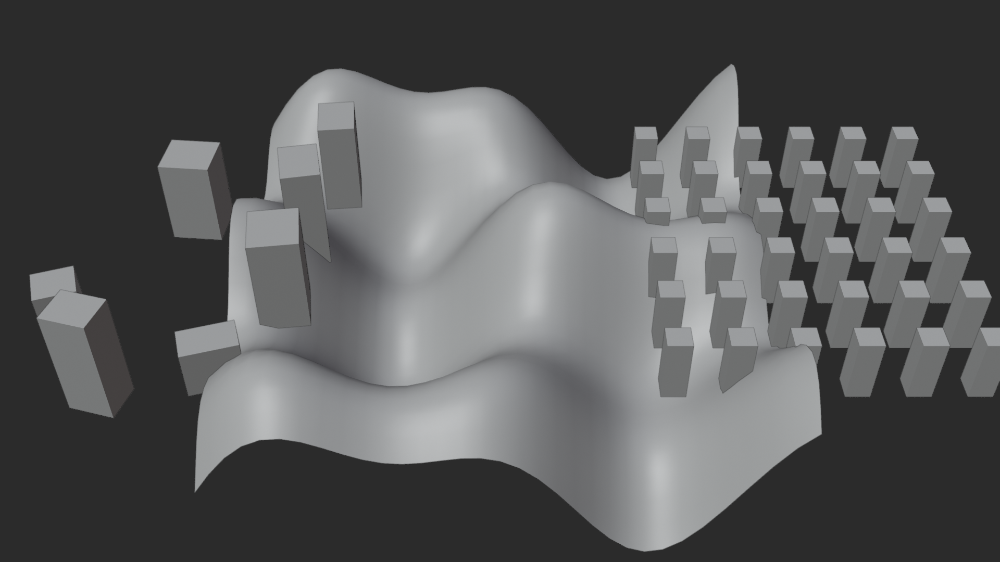
Traditional Modeling Challenges:
- Repetitive work: Manually placing hundreds of trees, rocks, or building elements
- Inflexible: Want to change spacing? Move everything by hand
- Limited variation: Copy-paste creates obvious patterns
- Time-consuming: Complex scenes take days or weeks to build
- Hard to iterate: Director wants changes? Start over
Procedural Modeling Solutions:
- Automated placement: Algorithm handles distribution, you control rules
- Fully parametric: Adjust sliders to change entire scenes instantly
- Infinite variation: Randomness + control = natural-looking results
- Rapid creation: Build systems once, generate variations forever
- Non-destructive iteration: Experiment freely without losing work
Real-World Example:
Traditional: Placing 1000 trees on a mountainside = 8+ hours of tedious work. Each tree positioned, rotated, scaled manually. Client wants more trees? Add another 4 hours.
Procedural: Build scatter system = 2 hours. Generate 1000 trees = instant. Client wants more? Adjust slider. Want different distribution? Tweak parameters. Change tree species? Swap instance. Total time saved: Days.
What Makes Modeling "Procedural"?
🔍 Key Characteristics
Procedural systems share these traits:
1. Rule-Based Generation
- Geometry created by algorithms, not direct manipulation
- Rules define patterns: "Place object every 2 meters," "Scale based on elevation"
- Change rules = change output instantly
- Example: "Ivy only grows on north-facing surfaces below 10m height"
2. Parametric Control
- Exposed parameters control system behavior
- Artist tweaks values, system regenerates
- No manual vertex pushing
- Example: Building height slider from 1 to 100 floors, system adds floors automatically
3. Non-Destructive Workflow
- Original data never lost
- Undo = adjust parameter back
- Experiment without fear
- Example: Try 50 different tree distributions, choose favorite, all others still accessible
4. Scalable Complexity
- Same system works with 10 or 10,000 elements
- Computational power = main limit
- Detail level adjustable (preview vs render quality)
- Example: City generator works for village (10 buildings) or metropolis (1000 buildings)
5. Controlled Randomness
- Natural variation without chaos
- Seed-based: Same seed = same result (reproducible)
- Ranges define acceptable variation
- Example: Trees vary 0.8× to 1.2× base scale, never smaller/larger
Height, Density, Style] --> B[Procedural Rules
Algorithm] B --> C{Generation Process} C --> D[Base Geometry] C --> E[Instance Placement] C --> F[Variation Application] D --> G[Final Output
Complete Asset] E --> G F --> G G --> H{Need Changes?} H -->|Yes| A H -->|No| I[Done!
Export/Render] style A fill:#4CAF50,stroke:#333,stroke-width:2px,color:#fff style B fill:#2196F3,stroke:#333,stroke-width:2px,color:#fff style G fill:#3a3a3a,stroke:#333,stroke-width:2px,color:#fff
Procedural Modeling vs Other Approaches
📊 Comparison Matrix
| Aspect | Traditional Modeling | Procedural Modeling |
|---|---|---|
| Control | Direct, per-vertex | Parametric, rule-based |
| Flexibility | Fixed after creation | Adjustable anytime |
| Speed (simple) | Fast (minutes) | Setup time (hours) |
| Speed (complex) | Slow (days/weeks) | Fast after setup (seconds) |
| Variation | Manual duplication | Automatic, infinite |
| Iteration | Destructive (redo work) | Non-destructive (adjust) |
| Learning Curve | Gentler, immediate | Steeper, logical thinking |
| Artistic Control | Complete, intuitive | Indirect, technical |
| Best For | Unique, hero assets | Repetitive, systemic content |
The Professional Approach: Use both! Model hero assets by hand, populate scenes procedurally. Sculpt main character traditionally, scatter crowd with Geometry Nodes. Combine strengths, avoid weaknesses.
What You'll Build This Lesson
✅ Three Production-Ready Systems
Project 1: Procedural Terrain Generator
- Noise-based height displacement
- Multiple noise layers for natural variation
- Automatic material zones (snow, rock, grass by elevation)
- Erosion simulation with slope detection
- Performance optimization for large terrains
- Skills: Fields, noise textures, attribute math, selection masks
Project 2: Ivy Growth System
- Surface-aware distribution (only grows on surfaces)
- Proximity detection (follows surface contours)
- Randomized branch patterns
- Leaves that orient to surface normals
- Density control and pruning
- Skills: Proximity, raycasting, surface sampling, instancing
Project 3: Parametric Building Generator
- Floor height and count control
- Automatic window placement (grid-based)
- Boolean operations for door/window cutouts
- Roof variations (flat, peaked, complex)
- Material assignments per element
- Skills: Mesh operations, booleans, complex parameter systems, modular design
By Lesson End: Three reusable, production-ready procedural systems in your library. Skills to create your own custom generators.
💭 Mindset Shift: Traditional modeling asks "How do I create this specific object?" Procedural modeling asks "What system can generate infinite variations of this type of object?" This shift from specific to systemic thinking is powerful—it's the difference between being a craftsperson and being a designer of tools. Both are valuable, but procedural thinking multiplies your creative output exponentially. Embrace the challenge!
🎯 Ready to Level Up?
You've mastered the basics. Now it's time to build systems that feel like magic. Each project in this lesson builds on the last, introducing new concepts gradually. By the end, you'll have skills that put you in the top tier of Blender users. Let's begin!
🌊 Field-Based Operations
Fields are the secret sauce of advanced Geometry Nodes. If you master fields, you unlock procedural modeling's full potential. Here's the core concept: instead of thinking "this object has a position," think "every point on this object has its own position data." Instead of "the object is red," think "each point has its own color value that could be different." Fields transform single values into per-element data that varies across geometry. This enables gradient effects, conditional selections, position-based modifications, and everything that makes procedural systems feel intelligent. Let's dive deep into field thinking!
Understanding Fields vs Values
💡 The Fundamental Distinction
Single Value (Not a Field):
- One number/vector applies to entire geometry
- Example: Scale = 2.0 (all geometry scales by 2.0)
- When you type a number directly in node input, it's a single value
- Gray socket with no connection = single value
- Analogy: Setting thermostat to 70°F—entire house one temperature
Field (Per-Element Data):
- Data varies across geometry elements (points, faces, etc.)
- Example: Position field—every point has different position
- When you connect attribute/math nodes, you create fields
- Gray socket WITH connection = usually a field
- Analogy: Temperature map—different temperature at each location
Why This Matters:
Fields enable per-element variation. Want to scale objects based on their height? That's a field operation. Want to color faces based on their slope? Field operation. Want to delete points that are too close to another object? Field operation. Without fields, everything is uniform. With fields, everything is possible.
Scale: 2.0] --> B[Applies to ALL
elements equally] B --> C[Uniform Result
Everything × 2] D[Field Input
Position.Z] --> E[Each element has
different Z value] E --> F[Varied Result
Based on height] style A fill:#999,stroke:#333,stroke-width:2px,color:#fff style C fill:#999,stroke:#333,stroke-width:2px,color:#fff style D fill:#2196F3,stroke:#333,stroke-width:2px,color:#fff style F fill:#3a3a3a,stroke:#333,stroke-width:2px,color:#fff
Built-In Attribute Fields
✅ Always-Available Fields
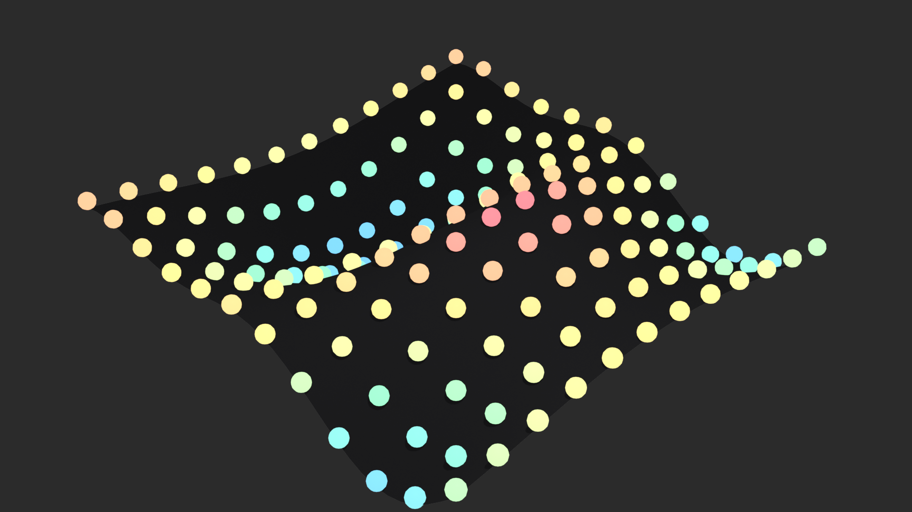
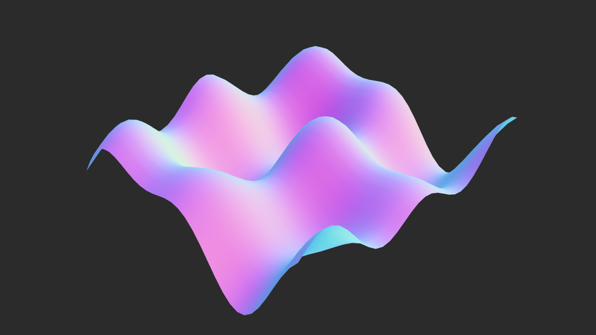
Blender provides these fields automatically on geometry:
Position (Vector Field)
- Access: Named Attribute node, name: "position"
- Contains: X, Y, Z coordinates for each point
- Type: Vector (purple socket)
- Use cases:
- Height-based effects (Z component)
- Distance-based variations
- Position-driven colors/scales
- Example: Delete points above Z=5 → Compare Position.Z > 5
Normal (Vector Field)
- Access: Named Attribute node, name: "normal"
- Contains: Surface direction at each point/face
- Type: Vector (purple socket), unit length (normalized)
- Use cases:
- Slope detection (normal.Z = how flat)
- Orienting instances to surfaces
- Lighting calculations
- Example: Place trees only on flat surfaces → Normal.Z > 0.9 (facing up)
Index (Integer Field)
- Access: Index node (Add > Input > Index)
- Contains: Sequential number for each element (0, 1, 2, 3...)
- Type: Integer (blue socket)
- Use cases:
- Unique ID per element
- Per-element random seed (Index → Random Value ID)
- Selecting every Nth element (Index % N == 0)
- Example: Color gradient from first to last point → Index → Map Range → Color
ID (Integer Field, Optional)
- Access: ID node (Add > Input > ID)
- Contains: Custom stored IDs (if attribute exists)
- Difference from Index: ID persists through modifications, Index changes
- Use cases: Tracking specific elements after operations
Creating Selection Fields
🎯 Boolean Masks for Selection
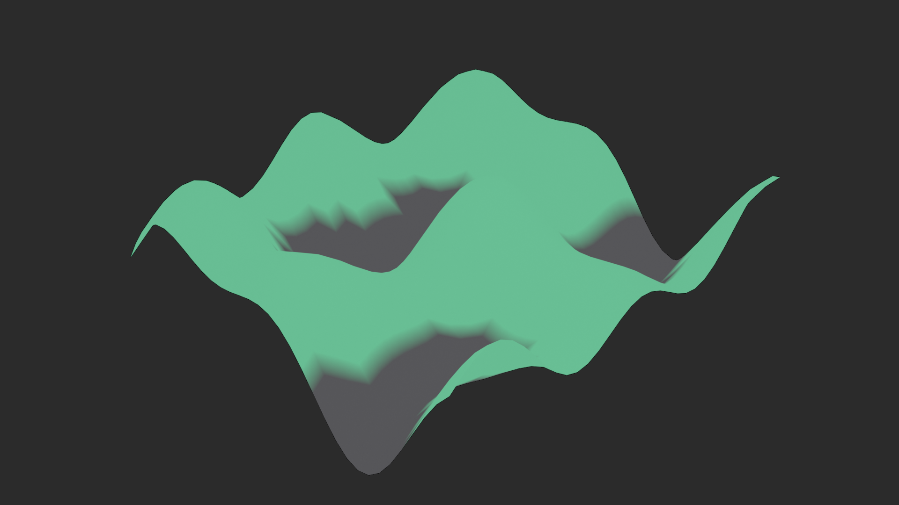
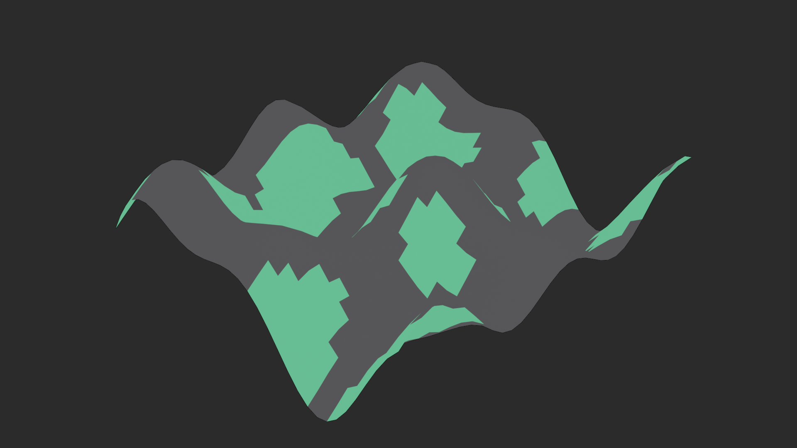
The Power of Selection Fields: Most geometry operations accept "Selection" input (white/boolean socket). This field determines WHICH elements to affect. By creating smart selection fields, you make procedural systems intelligent.
Basic Pattern: Compare Field to Threshold
Position.Z → Compare (Greater Than) → Value: 5.0 → Selection (Boolean) Result: True for points above Z=5, False below
Example 1: Height-Based Selection
- Goal: Delete all geometry above height 10
- Setup:
- Add: Named Attribute node, name: "position"
- Add: Separate XYZ node
- Connect: Position (vector) → Separate XYZ
- Add: Compare node (Math node set to "Compare")
- Connect: Separate XYZ "Z" → Compare "A"
- Set Compare "B": 10.0
- Set Compare mode: "Greater Than"
- Connect: Compare output → Delete Geometry "Selection"
- Result: Points with Z > 10 are deleted
Example 2: Slope-Based Selection
- Goal: Select only flat surfaces (for grass placement)
- Setup:
- Add: Named Attribute node, name: "normal"
- Add: Separate XYZ node
- Connect: Normal → Separate XYZ
- Add: Compare node
- Connect: Separate XYZ "Z" → Compare "A"
- Set Compare "B": 0.7 (about 45° or flatter)
- Set Compare mode: "Greater Than"
- Logic: Normal.Z = 1.0 (flat up), Normal.Z = 0.0 (vertical)
- Result: True for surfaces facing upward
Example 3: Modulo for Patterns
- Goal: Select every 5th element
- Setup:
- Add: Index node
- Add: Math node, set to "Modulo"
- Connect: Index → Math "Value"
- Set Math "B": 5
- Add: Compare node, mode: "Equal"
- Connect: Math output → Compare "A"
- Set Compare "B": 0
- Logic: Index % 5 == 0 → True for indices 0, 5, 10, 15...
- Result: Every fifth element selected
Combining Multiple Fields
💡 Boolean Logic for Complex Selections
Combine selection fields with Boolean operations:
Boolean Math Node Operations:
- AND: Both conditions must be true
- Add: Math node, mode: "Compare", operation: "AND"
- Use: "Select flat surfaces ABOVE height 5"
- OR: Either condition true
- Add: Math node, mode: "Compare", operation: "OR"
- Use: "Select very high OR very low points"
- NOT: Invert selection
- Add: Math node, mode: "Compare", operation: "NOT"
- Use: "Select everything EXCEPT selected"
Practical Example: Grass on Flat Low Ground
# Condition 1: Height below 5 Position.Z → Compare (Less Than) 5.0 → Boolean A # Condition 2: Surface flat (slope < 30°) Normal.Z → Compare (Greater Than) 0.85 → Boolean B # Combine: Must be BOTH low AND flat Boolean A → Math (AND) ← Boolean B → Final Selection
Example: Trees on Slopes, Not Peaks or Valleys
# Condition 1: Height between 5 and 15 Position.Z → Compare (Greater Than) 5.0 → Boolean A Position.Z → Compare (Less Than) 15.0 → Boolean B Boolean A → Math (AND) ← Boolean B → HeightRange # Condition 2: Moderate slope (not too flat, not too steep) Normal.Z → Compare (Greater Than) 0.5 → Boolean C (not too steep) Normal.Z → Compare (Less Than) 0.9 → Boolean D (not too flat) Boolean C → Math (AND) ← Boolean D → SlopeRange # Combine both conditions HeightRange → Math (AND) ← SlopeRange → Final Selection
Field Math Operations
✅ Manipulating Field Values
You can do math on fields just like single values:
Example 1: Scale Based on Height
- Goal: Trees taller at higher elevations
- Setup:
Position.Z → Map Range (0 to 20) → (0.5 to 2.0) → Scale Instances
- Logic:
- Ground level (Z=0) → Scale 0.5× (small)
- Mid elevation (Z=10) → Scale 1.25× (medium)
- High elevation (Z=20) → Scale 2.0× (large)
- Result: Natural size variation correlated with height
Example 2: Color Gradient by Position
- Goal: Color transitions from red (bottom) to blue (top)
- Setup:
Position.Z → Map Range (0 to 10) → (0.0 to 1.0) → ColorRamp → Store Color Attribute
- ColorRamp: Red at 0.0, Blue at 1.0
- Result: Smooth vertical gradient
Example 3: Distance-Based Falloff
- Goal: Effect stronger near origin, weaker far away
- Setup:
Position → Vector Math (Length) → Distance from origin Distance → Map Range (0 to 50) → (1.0 to 0.0) → Falloff value Falloff → Math (Multiply) with Effect → Scaled Effect
- Logic: Length of position vector = distance from center
- Result: Radial falloff from center point
Practical Field Workflow
🔄 Step-by-Step Field Design
Process for Creating Field-Based Systems:
Step 1: Identify What Should Vary
- Ask: "What should be different per element?"
- Examples:
- Size based on elevation
- Color based on slope
- Density based on distance
- Selection based on multiple criteria
Step 2: Choose Input Field
- What geometry data determines variation?
- Common choices:
- Position (location-based)
- Normal (orientation-based)
- Index (sequential/pattern-based)
- Custom attribute (stored data)
Step 3: Transform Field
- Remap values to useful range
- Apply math operations
- Create boolean masks if selecting
- Tools: Map Range, Math nodes, Compare
Step 4: Apply to Target
- Connect transformed field to appropriate input
- Scale, Rotation, Selection, Color, etc.
- Test and adjust ranges
Step 5: Refine and Combine
- Add additional conditions
- Combine multiple fields
- Fine-tune ranges and operations
- Expose key parameters
💭 Field Thinking: The shift to field-based thinking is like learning to see the world in a new dimension. Initially, you think "make this object blue." With fields, you think "create a color field where each point's color depends on its properties." This unlocks infinite complexity from simple rules. When you catch yourself thinking in fields naturally—"I could use Position.Z to drive this"—you've made the leap. That's when procedural modeling becomes intuitive!
🎯 Field Operations Summary
- Fields = per-element data: Values that vary across geometry
- Built-in fields: Position, Normal, Index always available
- Selection fields: Boolean masks using Compare nodes
- Field math: Transform and combine fields with math operations
- Boolean logic: AND, OR, NOT for complex conditions
- Map Range: Essential for remapping field values to useful ranges
- Workflow: Identify variation → Choose field → Transform → Apply → Refine
Master fields, master procedural modeling!
🎨 Noise and Texture Systems
Randomness makes procedural content feel natural, but pure randomness creates chaos. Noise is controlled randomness—patterns that vary smoothly and naturally, just like you see in real-world surfaces, terrain, and organic forms. Think of noise as the difference between static on a TV (pure random) and the grain in wood or ripples on water (structured variation). Blender's texture nodes provide powerful noise functions that you can use in Geometry Nodes to create everything from realistic terrain to organic surface variations. Let's explore how to harness noise to make your procedural systems feel alive!
Understanding Noise vs Randomness
💡 The Critical Difference
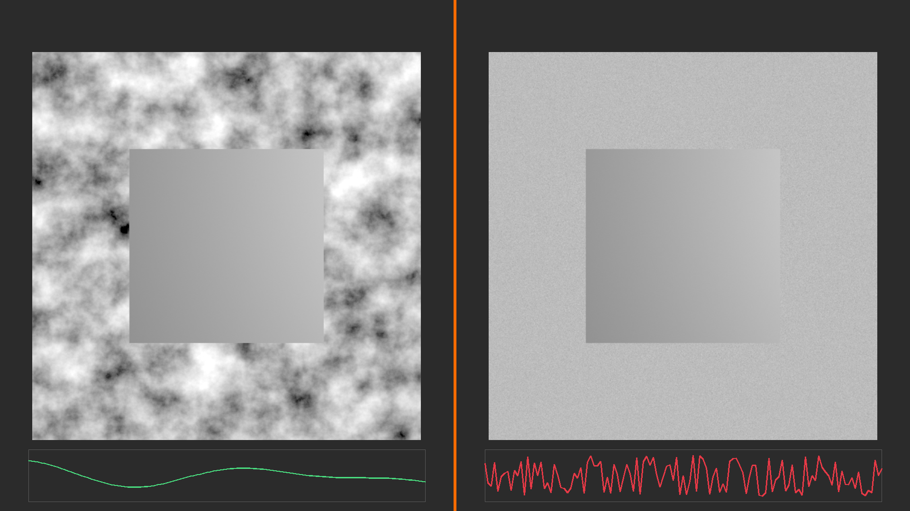
Pure Random (Random Value Node):
- Each element completely independent
- No correlation between neighbors
- Can produce extreme jumps/discontinuities
- Good for: Discrete variation (instance selection, color picking)
- Example: Pick random tree from 5 types—each instance independent choice
- Analogy: Flipping coins—each flip unrelated to previous
Noise (Texture Nodes):
- Values smoothly interpolated between samples
- Nearby points have similar values (coherent)
- Creates organic patterns and gradients
- Good for: Continuous variation (displacement, density, gradients)
- Example: Terrain height variation—smooth hills and valleys
- Analogy: Rolling hills—nearby elevations similar, gradual changes
When to Use Each:
| Need | Use | Example |
|---|---|---|
| Smooth transitions | Noise | Terrain height |
| Sharp differences | Random | Material selection |
| Natural patterns | Noise | Wood grain, clouds |
| Per-element unique | Random | Instance seed values |
Discrete Jumps] --> B[Each value
independent] B --> C[Good for
Selections] D[Noise Texture
Smooth Variation] --> E[Neighboring values
correlated] E --> F[Good for
Continuous Effects] style A fill:#FF5722,stroke:#333,stroke-width:2px,color:#fff style D fill:#4CAF50,stroke:#333,stroke-width:2px,color:#fff
Noise Texture Types
✅ Available Noise Patterns
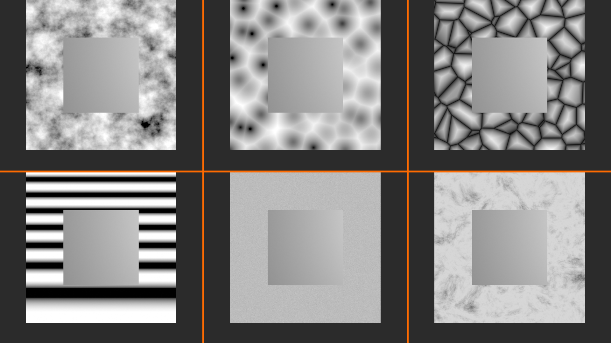
Access: Add > Texture > Noise Texture (and other texture nodes)
1. Noise Texture (Perlin/Simplex)
- Appearance: Soft, cloudy patterns
- Parameters:
- Scale: Size of noise features (lower = larger)
- Detail: Number of noise layers (octaves)
- Roughness: Contrast between layers
- Distortion: Warps noise pattern
- Best for: Organic terrain, clouds, general-purpose displacement
- Output: Float (0-1) or Color
2. Voronoi Texture
- Appearance: Cell-based patterns (like cracked earth, cells)
- Modes:
- F1: Distance to nearest cell point (smooth cells)
- F2: Distance to second-nearest (interesting boundaries)
- Smooth F1: Softened cell edges
- Distance to Edge: Crack/vein patterns
- N-Sphere Radius: Variable cell sizes
- Best for: Cracked surfaces, cellular patterns, stylized variation
- Outputs: Distance, Color, Position
3. Wave Texture
- Appearance: Striped/banded patterns
- Types: Bands, Rings, Saw (sharp), Triangle (linear)
- Best for: Layered terrain, wood rings, ripple effects
- Parameters: Scale, Distortion, Detail
4. White Noise Texture
- Appearance: Pure random per-point (no interpolation)
- Best for: Per-element random seed, hash function
- Similar to: Random Value node, but texture-based
5. Musgrave Texture
- Appearance: Realistic terrain-like patterns
- Types: Multifractal, Ridged Multifractal, Hybrid, FBM, Hetero Terrain
- Best for: Mountains, rocky terrain, complex natural features
- Note: More detailed/complex than simple Noise
Using Noise in Geometry Nodes
🔧 Connecting Noise to Geometry
Key Concept: Texture nodes need position input to sample noise at geometry locations.
Basic Setup Pattern:
Position (Vector) → Noise Texture (Vector input) → Float output → Use for displacement/scale/etc
Why Position?
- Texture nodes sample 3D noise field based on coordinates
- Each point's position = sample location in noise
- Same position = same noise value (consistent/stable)
- Different positions = different noise values (variation)
Example 1: Terrain Displacement
# Step 1: Get base grid Mesh Grid (100×100 vertices) # Step 2: Sample noise at each point position Position → Noise Texture (Scale: 5.0, Detail: 5) → Height field # Step 3: Convert to vertical displacement Height (0-1) → Map Range (0-1 to 0-10) → Displacement amount # Step 4: Apply displacement Position → Separate XYZ Displacement → Combine XYZ (as Z component) Combined Vector → Set Position (Offset) # Result: Grid becomes terrain with hills/valleys
Example 2: Instance Scale Variation
# Sample noise at instance positions Instance Positions → Noise Texture (Scale: 10.0) → Noise values (0-1) # Map to useful scale range Noise → Map Range (0-1 to 0.7-1.3) → Scale variation # Apply to instances Scale variation → Scale Instances # Result: Smooth size variation across instances
Noise Parameters Deep Dive
💡 Understanding Key Parameters
Scale (Most Important!):
- What it does: Controls size of noise features
- Low values (0.1-2.0): Large, broad features (rolling hills)
- Medium values (5.0-20.0): Medium features (typical terrain)
- High values (50.0+): Small, tight features (texture detail)
- Tip: Divide Position by custom scale value for more control
Position → Vector Math (Divide) by 10.0 → Noise Texture # Easier to control than internal Scale parameter
Detail (Octaves):
- What it does: Adds successive layers of finer noise
- Low detail (0-2): Smooth, simple patterns
- Medium detail (3-5): Natural complexity (default)
- High detail (6-10): Very detailed, may be noisy
- Performance note: Higher detail = more computation
- Principle: Each octave adds half the amplitude at double the frequency
Roughness:
- What it does: Controls blend between detail layers
- Low roughness (0.0-0.3): Smooth, minimal detail contribution
- Medium roughness (0.5): Balanced (default)
- High roughness (0.7-1.0): Sharp, high-contrast details
- Typical use: Leave at 0.5 unless specific effect needed
Distortion:
- What it does: Warps noise pattern (domain warping)
- Zero (0.0): Clean noise pattern
- Low (0.5-2.0): Subtle swirl/flow
- High (5.0+): Dramatic warping, abstract patterns
- Use for: Organic, flowing effects (lava, clouds)
Layering Multiple Noise
✅ Creating Complex Patterns
Principle: Combine multiple noise scales for natural complexity. Real terrain has large mountains AND small bumps!
Pattern: Base + Detail Layers
# Layer 1: Large features (base shape) Position → Noise Texture (Scale: 2.0, Detail: 3) → Large features (×5.0 amplitude) # Layer 2: Medium features (main detail) Position → Noise Texture (Scale: 10.0, Detail: 4) → Medium features (×2.0 amplitude) # Layer 3: Fine details (texture) Position → Noise Texture (Scale: 50.0, Detail: 2) → Fine features (×0.5 amplitude) # Combine: Add all layers Large + Medium + Fine → Total displacement # Result: Natural multi-scale terrain
Example: Realistic Terrain (3 Layers)
- Setup:
- Create base grid (100×100)
- Get Position field
- Add three Noise Texture nodes with different scales
- Multiply each by amplitude (5.0, 2.0, 0.5)
- Add all three together (Math node, Add)
- Use sum for Z displacement in Set Position
- Why it works: Different scales create natural frequency distribution (like real landscapes)
- Adjustability: Change individual layer scales/amplitudes for different terrain types
Amplitude Guidelines:
- Base layer (largest scale): Highest amplitude (50-70% of total height)
- Detail layers: Progressively smaller amplitudes
- Rule of thumb: Each layer 40-50% of previous layer's amplitude
- Example: 5.0, 2.5, 1.25, 0.6 (halving each time)
Noise-Based Selection
🎯 Using Noise for Masks
Technique: Sample noise, threshold it to create boolean selection field.
Example 1: Random Instance Removal (Sparse Forest)
# Get noise value at each instance position Instance Position → Noise Texture (Scale: 5.0) → Noise (0-1) # Threshold: Keep only values above 0.7 Noise → Compare (Greater Than) 0.7 → Keep Selection # Apply: Delete instances where noise < 0.7 Keep Selection → Delete Geometry (Instances) # Result: 30% of instances kept, natural-looking sparse distribution
Example 2: Noise-Based Material Zones
# Sample noise for variation Position → Noise Texture (Scale: 8.0) → Zone noise # Create three zones with thresholds Zone noise → Compare (Less Than) 0.33 → Material A zone Zone noise → Compare (Greater Than) 0.66 → Material B zone # Remainder (0.33-0.66) → Material C zone # Assign materials to zones Material A zone → Set Material (Material A) Material B zone → Set Material (Material B) # etc. # Result: Organic material distribution (like moss on rocks)
Example 3: Density Variation
- Goal: Vary instance density based on noise
- Setup:
# Dense distribution Distribute Points on Faces (Dense: 10000 points) # Noise-based removal Point Position → Noise Texture (Scale: 3.0) → Density noise Density noise → Compare (Greater Than) 0.4 → Keep mask Keep mask → Delete Geometry (Points) # Result: Varied density—thick patches, thin patches naturally
Practical Noise Recipes
💡 Common Noise Setups
Recipe 1: Rolling Hills Terrain
Parameters: - Noise Scale: 2.0 (large, smooth features) - Detail: 3 - Amplitude: 5.0 units - Single layer sufficient Use: Gentle landscapes, golf courses, meadows
Recipe 2: Mountain Terrain
Layer 1: Scale 1.5, Detail 4, Amplitude 8.0 (major peaks) Layer 2: Scale 8.0, Detail 5, Amplitude 3.0 (ridges) Layer 3: Scale 25.0, Detail 3, Amplitude 1.0 (surface texture) Use: Realistic mountainous terrain Alternative: Musgrave Texture (Ridged Multifractal mode)
Recipe 3: Organic Surface Bumps
Parameters: - Voronoi Texture, F1 mode - Scale: 20.0 - Amplitude: 0.2 units (subtle) Use: Skin texture, orange peel, rough surfaces
Recipe 4: Cracked Earth
Parameters: - Voronoi Texture, "Distance to Edge" mode - Scale: 5.0 - Invert output (1.0 - Voronoi) - Threshold for crack vs surface Use: Dry ground, cracked paint, cellular patterns
Recipe 5: Natural Distribution Mask
Parameters: - Noise Scale: 4.0 - Detail: 2 (smooth) - Threshold: 0.6 (keep top 40%) Use: Tree/rock placement, grass clumps, patch effects
💭 Noise as Nature's Language: Nature doesn't place trees in perfect grids or create perfectly smooth mountains. Noise lets us speak nature's language—controlled chaos, fractal complexity, organic variation. When you look at real terrain, you're seeing the result of millions of years of noise-like processes (erosion, weathering, growth). By layering noise at different scales, we can approximate these natural patterns. The magic happens when you find the right combination of scale, detail, and amplitude that makes viewers think "that looks real" without knowing why!
🎯 Noise Systems Summary
- Noise vs Random: Noise is smooth/coherent, Random is discrete/independent
- Texture types: Noise (general), Voronoi (cells), Wave (bands), Musgrave (terrain)
- Position input: Sample noise at geometry point locations
- Key parameters: Scale (feature size), Detail (layers), Roughness (contrast)
- Layering: Combine multiple scales for natural complexity
- Amplitude decay: Larger features = higher amplitude, smaller = lower
- Selection masks: Threshold noise for boolean fields
- Recipes: Different setups for hills, mountains, bumps, cracks, masks
Noise brings procedural systems to life!
📍 Advanced Distribution Techniques
Distribution is the art of placing things—where objects appear, how many, and why. Basic instancing places copies at specified points, but advanced distribution creates intelligent placement systems that respond to surfaces, density fields, and constraints. This is how professionals create forests that populate hillsides realistically, crowds that avoid obstacles, and textures that follow surface contours. The techniques you'll learn here transform simple scattering into contextual, rule-based placement systems. Let's master the art of intelligent distribution!
Distribution Methods Overview
💡 Three Core Approaches
1. Point-Based Distribution
- Method: Create points, then instance on them
- Nodes: Mesh Line, Curve to Points, Grid points
- Control: Explicit point positions (full control)
- Best for: Regular patterns, paths, grids
- Example: Fence posts along curve
2. Surface-Based Distribution
- Method: Scatter points on mesh surfaces
- Node: Distribute Points on Faces
- Control: Density, randomness, surface properties
- Best for: Natural scattering (trees, grass, rocks)
- Example: Forest on terrain
3. Volume-Based Distribution
- Method: Fill 3D space with points
- Nodes: Custom setups with position filtering
- Control: 3D density fields, constraints
- Best for: Volumetric effects (particles, clouds, swarms)
- Example: Fireflies in air, underwater particles
Mesh Line/Grid] B -->|Surface Coverage| D[Surface-Based
Distribute Points] B -->|3D Space Fill| E[Volume-Based
Custom Setup] C --> F[Instance on Points] D --> F E --> F F --> G[Final Result] style A fill:#4CAF50,stroke:#333,stroke-width:2px,color:#fff style F fill:#3a3a3a,stroke:#333,stroke-width:2px,color:#fff
Distribute Points on Faces Node
✅ The Workhorse of Surface Distribution
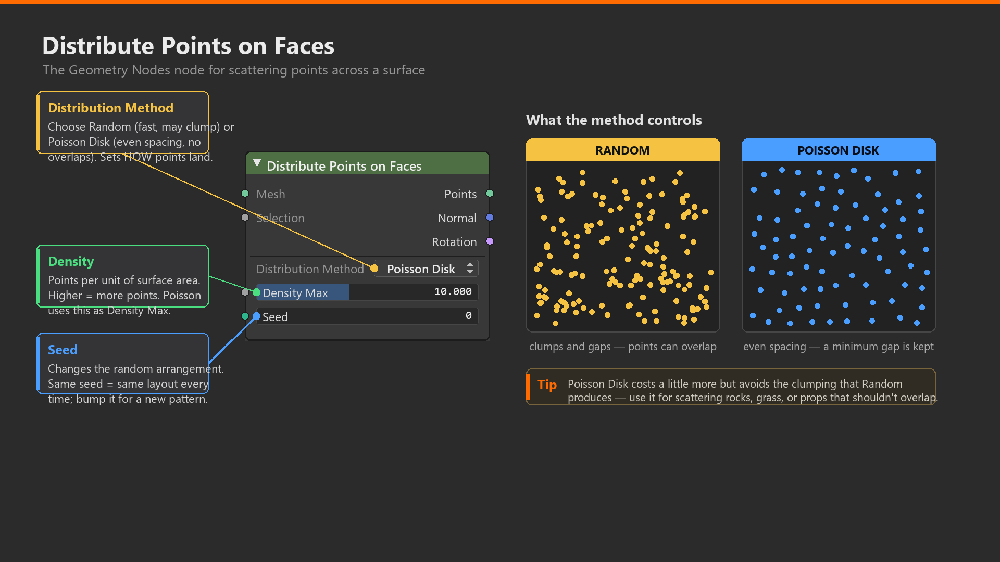
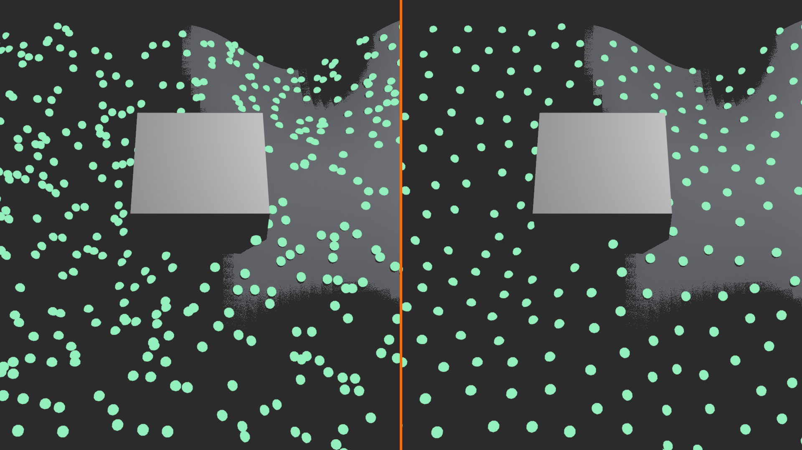
What It Does: Scatters points across mesh surface based on density and randomness settings.
Key Parameters:
Density (Most Important):
- Type: Float (points per area unit) or field
- Single value: Uniform density everywhere
- Field input: Variable density (paint density map!)
- Typical values:
- Sparse (rocks): 0.1 - 1.0 per m²
- Medium (trees): 1.0 - 10.0 per m²
- Dense (grass): 50.0 - 500.0 per m²
- Performance note: Higher density = more points = slower
Seed:
- Type: Integer
- Purpose: Randomization seed (same seed = same pattern)
- Use: Change seed to get different distributions with same density
- Tip: Expose as parameter for easy variation testing
Distribution Method:
- Poisson Disk: Maintains minimum spacing (no clustering)
- More uniform, professional look
- Prevents overlapping instances
- Best for trees, rocks, buildings
- Random: Completely random (can cluster)
- Natural-looking variation
- Can create dense and sparse areas
- Best for organic scatter (grass, leaves)
Density Field Control
🎯 Painting Density with Fields
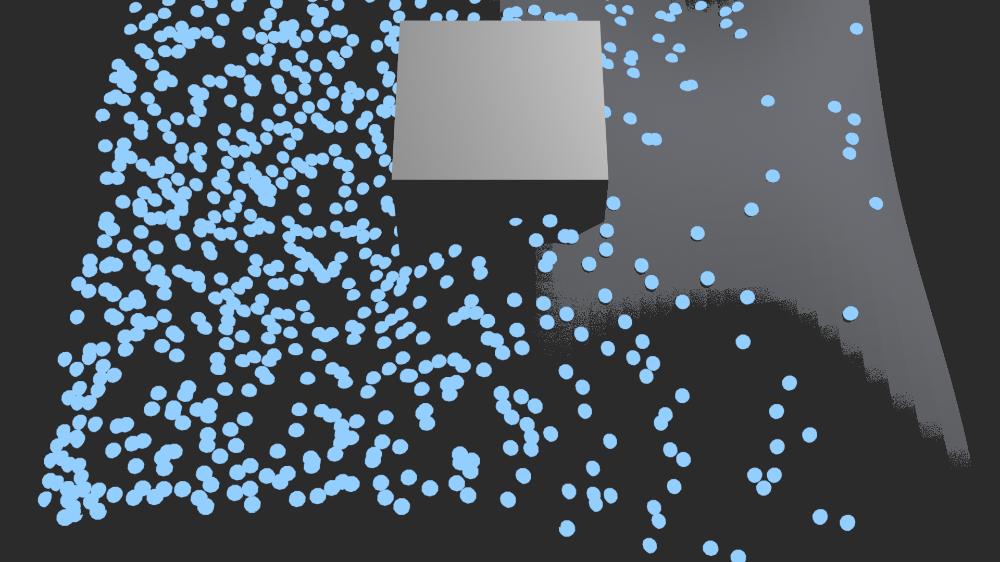
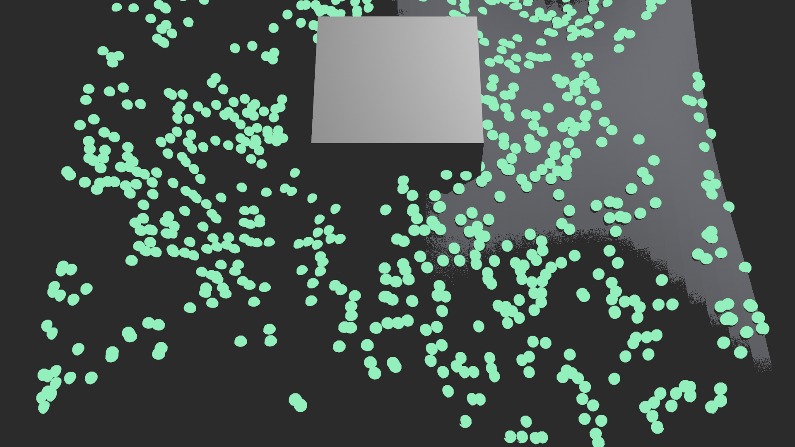
Concept: Instead of uniform density, use field to vary density across surface.
Method 1: Position-Based Density
# More trees at lower elevations Position.Z → Map Range (0 to 20) → (10.0 to 1.0) → Density field # Result: Dense at ground level (10/m²), sparse at peaks (1/m²) # Connect to Distribute Points on Faces Density field → "Density" input
Method 2: Noise-Based Density
# Patches of varying density Position → Noise Texture (Scale: 5.0) → Noise (0-1) Noise → Map Range (0-1 to 2-20) → Variable density # Result: Natural patches—thick here, thin there Variable density → "Density" input
Method 3: Slope-Based Density
# Trees only on flat ground, rocks on slopes Normal.Z → Map Range (0.9-1.0 to 10-0) → Tree density (flat only) Normal.Z → Map Range (0.3-0.7 to 0-15) → Rock density (slopes only) # Result: Contextual distribution based on surface angle
Method 4: Combined Conditions
# Complex rule: Dense at low flat areas, sparse elsewhere Position.Z → Map Range (0-10 to 1.0-0.1) → Height factor Normal.Z → Map Range (0.8-1.0 to 0.0-1.0) → Flatness factor # Multiply factors Height factor × Flatness factor × Base density → Final density # Result: Maximum density where it's low AND flat
Advanced Scattering Patterns
💡 Beyond Random Scatter
Pattern 1: Rings/Circles
- Goal: Objects arranged in circular pattern
- Setup:
# Calculate distance from center Position → Vector Math (Length) → Distance from origin # Select ring range Distance → Compare (Greater Than) 5.0 → Outer bound Distance → Compare (Less Than) 8.0 → Inner bound Outer AND Inner → Ring mask # Apply to distribution Ring mask → Distribute Points on Faces "Selection" # Result: Points only in ring (radius 5-8)
- Use cases: Campfire circle, ritual patterns, radial layouts
Pattern 2: Gradient Distribution
- Goal: Density increases/decreases along axis
- Setup:
# Left to right density increase Position.X → Map Range (-10 to 10) → (1.0 to 50.0) → Density gradient # Result: Sparse on left, dense on right, smooth transition
- Use cases: Beach (wet to dry), forest edge, transition zones
Pattern 3: Exclusion Zones
- Goal: No points in specific areas (paths, clearings)
- Setup:
# Define exclusion zone (e.g., center circle) Position → Vector Math (Length) → Distance Distance → Compare (Greater Than) 5.0 → Outside circle # Distribute only outside exclusion Outside circle → Distribute Points "Selection" # Result: Clear area in center, scattered around
- Use cases: Clearings in forests, paths through grass, building foundations
Pattern 4: Multi-Species Distribution
- Goal: Different objects in different zones
- Setup:
# Distribute all points Distribute Points on Faces → All points # Zone 1: Low elevation (grass) Position.Z < 5.0 → Grass zone selection Grass zone → Instance on Points (Grass instance) # Zone 2: Mid elevation (trees) 5.0 < Position.Z < 15.0 → Tree zone selection Tree zone → Instance on Points (Tree instance) # Zone 3: High elevation (rocks) Position.Z > 15.0 → Rock zone selection Rock zone → Instance on Points (Rock instance) # Join all instances Join Geometry → Output
- Result: Altitude-based ecosystem distribution
Orientation and Alignment
✅ Making Instances Follow Surfaces
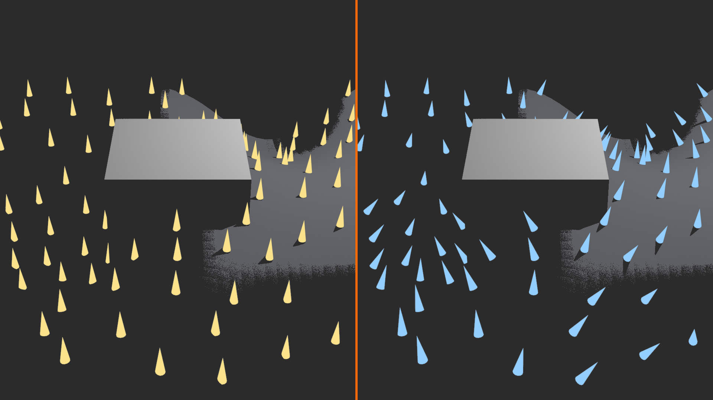
Problem: Distributed instances point in default direction, not aligned to surface.
Solution: Align Euler to Vector Node
- What it does: Rotates instances to match direction vector
- Common use: Align to surface normal (instances perpendicular to surface)
Basic Surface Alignment:
# Distribute points on surface Distribute Points on Faces → Points (has normal attribute) # Capture surface normal at point locations Capture Attribute (Normal) → Normal field for points # Align instances to surface normal Instance on Points → Normal field → Align Euler to Vector (Axis: Z, Local Space) → Rotation Rotation → Instance on Points "Rotation" input # Result: Instances perpendicular to surface (grass blades standing up)
Example: Trees Standing Upright
# Trees should point up regardless of terrain slope Distribute Points → Points # Create up vector (0, 0, 1) Combine XYZ (0, 0, 1) → Up vector # Align trees to up vector Up vector → Align Euler to Vector (Axis: Z) → Rotation Rotation → Instance on Points "Rotation" # Result: Trees always vertical, even on slopes
Example: Ivy Following Wall
# Ivy should lay flat against wall surface Distribute Points → Points with Normal # Align ivy to surface normal Normal → Align Euler to Vector (Axis: Z) → Rotation # Add random twist around normal Random Value (per point) → Map Range (0-1 to 0-360°) → Twist Rotation + Twist → Combined rotation Combined rotation → Instance on Points "Rotation" # Result: Ivy flat on wall, random twist for variation
Scale Variation
🔧 Natural Size Distribution
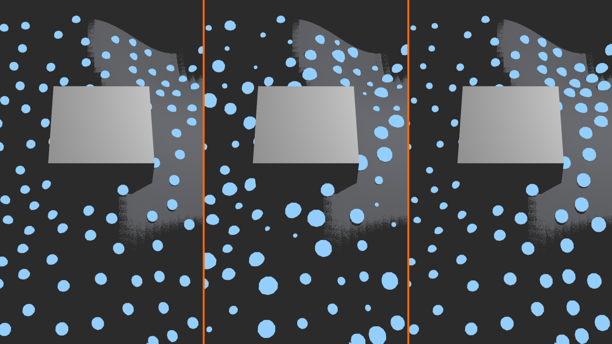
Principle: In nature, objects vary in size. Create believable variation with controlled randomness.
Method 1: Pure Random Variation
# Basic random scale Index → Random Value (ID, Float) → Random (0-1) Random → Map Range (0-1 to 0.7-1.3) → Scale variation (±30%) Scale variation → Scale Instances # Result: Each instance 70-130% of base size
Method 2: Noise-Based Variation (Smoother)
# Smoother scale variation using noise Instance Position → Noise Texture (Scale: 10.0) → Noise (0-1) Noise → Map Range (0-1 to 0.8-1.2) → Scale field Scale field → Scale Instances # Result: Neighboring instances similar size, smooth gradients
Method 3: Position-Correlated Scale
# Trees larger at lower elevations (more water) Position.Z → Map Range (0-20 to 1.5-0.7) → Elevation scale # Low: 1.5× (large), High: 0.7× (small) # Add random variation on top Random Value → Map Range (0-1 to 0.9-1.1) → Random factor Elevation scale × Random factor → Final scale Final scale → Scale Instances # Result: General trend + natural variation
Scale Distribution Guidelines:
- Subtle variation: 0.9× to 1.1× (±10%)
- Natural variation: 0.7× to 1.3× (±30%)
- Extreme variation: 0.5× to 2.0× (50-200%)
- Tip: More variation = less uniform, but can look wrong if extreme
- Best practice: Base size variation + contextual modifiers
Performance Optimization
⚠️ Keeping Distribution Systems Fast
Problem: High point counts slow viewport, make iteration painful.
Strategy 1: Viewport vs Render Density
- Setup: Expose density as parameter
- Workflow:
- Viewport: Density = 1.0 (preview quality)
- Render: Density = 10.0 (final quality)
- Implementation:
Group Input "Density Multiplier" → Math (Multiply) Base Density → Final Density # Adjust multiplier: 0.1 (fast preview) to 1.0 (full detail)
Strategy 2: Simplify Instances
- Use low-poly proxies in viewport
- Swap to high-poly for rendering
- Simple cube = preview, complex mesh = render
Strategy 3: Keep as Instances
- Avoid Realize Instances unless absolutely needed
- Instances = lightweight (1000s fast)
- Realized = heavy (100s slow)
Strategy 4: Limit Distribution Area
- Don't scatter across entire terrain if camera sees only portion
- Use selection masks to limit distribution to visible areas
- Camera frustum culling (advanced)
💭 Distribution Mastery: The difference between amateur and professional procedural work often comes down to distribution. Amateurs scatter uniformly and call it done. Professionals layer density fields, combine contextual rules, add natural variation, and think about performance. When someone looks at your forest and says "that looks real"—not knowing it's procedural—you've achieved distribution mastery. The rules are invisible, but the result feels right!
🎯 Distribution Techniques Summary
- Three methods: Point-based, Surface-based, Volume-based
- Distribute Points on Faces: Workhorse for surface scatter
- Density fields: Variable density using position, noise, slope
- Advanced patterns: Rings, gradients, exclusions, multi-species
- Alignment: Align Euler to Vector for surface-following instances
- Scale variation: Random + contextual for natural results
- Performance: Preview density, instance simplification, limit area
- Key principle: Layer rules for natural, contextual distribution
Smart distribution = professional results!
🔍 Proximity and Context-Aware Systems
Truly intelligent procedural systems don't just place objects—they understand their environment. Proximity operations let geometry respond to nearby objects: ivy that only grows where surfaces exist, snow that accumulates only on horizontal ledges, grass that avoids paths. This is context-aware modeling, where procedural systems make decisions based on spatial relationships. These techniques separate basic scattering from professional procedural assets that feel like they "understand" the scene. Let's explore how to make your systems spatially intelligent!
Proximity Concepts
💡 Understanding Spatial Queries
What is Proximity?
- Measuring distance between geometry elements
- Finding nearest surfaces/points
- Detecting intersections and overlaps
- Making decisions based on spatial relationships
Key Questions Proximity Answers:
- "How far is this point from that surface?"
- "What's the nearest point on that mesh?"
- "Does this ray hit that object?"
- "Is this point inside/outside that volume?"
- "Which points are within X distance of that object?"
Real-World Applications:
- Ivy growth: Only place ivy near wall surfaces
- Snow accumulation: More snow on horizontal surfaces, less on steep
- Moss growth: Grows in crevices and sheltered areas
- Erosion effects: Wear patterns where surfaces rub together
- Clearance zones: Keep grass away from building foundations
Geometry Proximity Node
✅ The Distance Tool
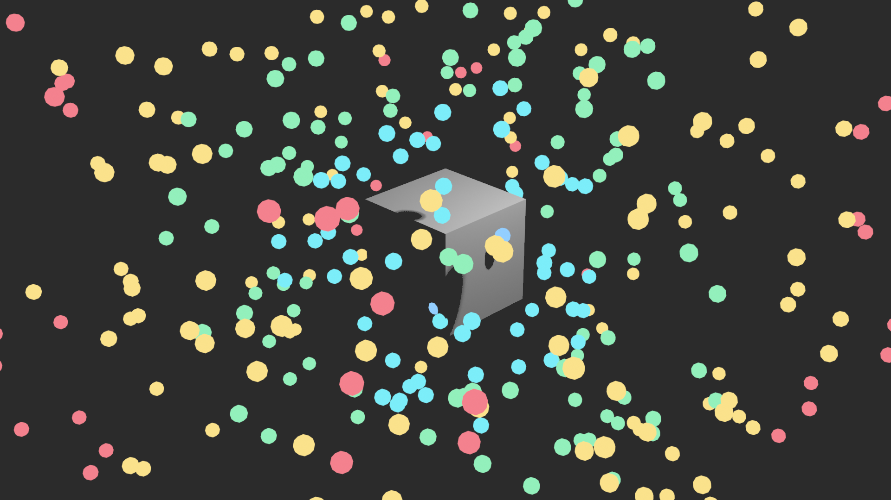
What It Does: Calculates distance from input geometry to target geometry.
Inputs:
- Geometry: Source geometry (points to measure from)
- Target: Target geometry (object to measure to)
- Source Position: Optional custom position field (defaults to geometry positions)
Outputs:
- Distance: Float field—distance to nearest point on target
- Position: Vector field—position of nearest point on target
- Normal: Vector field—surface normal at nearest point
Basic Example: Distance Field
# Setup Source Mesh (e.g., scattered points) → Geometry Proximity "Geometry" Target Mesh (e.g., wall) → Geometry Proximity "Target" # Output: Distance field Distance output → Each point knows its distance to wall # Use: Select only points within 1 meter of wall Distance → Compare (Less Than) 1.0 → Near wall selection Near wall selection → Delete Geometry (delete far points) # Result: Only points close to wall remain
Practical Proximity Examples
🛠️ Common Use Cases
Example 1: Ivy Growth Near Walls
# Distribute points in area Grid or Volume → Distribute Points → All points # Calculate distance to wall All points → Geometry Proximity (Target: Wall) → Distance # Keep only points very close to wall (0-0.5m) Distance → Compare (Less Than) 0.5 → Near wall Near wall → Delete Geometry (remove far points) # Remaining points become ivy positions Near wall points → Instance on Points (Ivy leaves) # Align ivy to wall normal Geometry Proximity "Normal" output → Align Euler to Vector → Rotation # Result: Ivy only near wall, facing outward from surface
Example 2: Snow Accumulation (Distance + Slope)
# Start with roof/ledge geometry Roof Mesh → Input geometry # Condition 1: Surface must be somewhat horizontal Normal.Z → Compare (Greater Than) 0.7 → Flat enough # Condition 2: Must be near snowfall source (above) Position → Geometry Proximity (Target: Sky plane above) → Distance to sky Distance → Compare (Less Than) 5.0 → Open to sky # Combine conditions Flat enough AND Open to sky → Snow accumulation mask # Add displacement for snow depth Snow mask → Math (Multiply) 0.5 → Snow depth Snow depth → Set Position (Offset Z) → Raised surfaces # Result: Snow only on flat, exposed surfaces
Example 3: Clearance Zone (No Grass Near Buildings)
# Distribute grass points Terrain → Distribute Points on Faces → Grass points # Calculate distance to building Grass points → Geometry Proximity (Target: Building) → Distance # Keep points more than 2m from building Distance → Compare (Greater Than) 2.0 → Safe distance # Delete points too close Safe distance → Delete Geometry (Points) # Instance grass on remaining points Remaining points → Instance on Points (Grass) # Result: Grass field with clear zone around building
Raycast Node
💡 Line-of-Sight Detection
What It Does: Shoots ray from point in direction, detects if/where it hits target geometry.
Inputs:
- Target Geometry: Object to test against
- Source Position: Ray origin points
- Ray Direction: Vector direction to shoot ray
- Ray Length: Maximum distance to check
Outputs:
- Is Hit: Boolean—did ray hit target?
- Hit Position: Vector—where ray hit (if hit)
- Hit Normal: Vector—surface normal at hit point
- Hit Distance: Float—distance to hit point
Example: Detect If Surface Exposed to Sky
# Setup Terrain points → Source Position Up vector (0, 0, 1) → Ray Direction 100.0 → Ray Length (tall enough to clear scene) # Cast rays upward Raycast (Target: Ceiling/obstacles above) → Is Hit output # Interpret results Is Hit = True → Obstacle above (sheltered) Is Hit = False → Clear sky above (exposed) # Invert for "exposed to sky" selection Is Hit → Math (NOT) → Exposed selection # Use for effects Exposed selection → Snow/rain effects
Example: Ground Conforming (Raycast Down)
# Scatter points at random heights Random distribution in volume → Floating points # Cast rays downward to find ground Point positions → Source Position Down vector (0, 0, -1) → Ray Direction Raycast (Target: Terrain) → Hit Position # Move points to ground level Hit Position → Set Position # Result: Points snap to terrain surface below them
Sample Nearest Nodes
✅ Sampling Data from Nearby Geometry
Sample Nearest Surface: Gets data from nearest point on target surface.
Sample Index: Gets data from specific element by index.
Use Case: Transfer Attributes Spatially
# Problem: Want scattered rocks to match terrain color beneath them # Terrain has vertex colors stored Terrain with "Color" attribute # Rocks distributed above terrain Distribute Points → Rock positions # Sample terrain color at rock positions Rock positions → Sample Nearest Surface (Target: Terrain) Sample "Color" attribute → Terrain colors at rock locations # Apply to rocks Sampled colors → Store Named Attribute "Color" on rocks # Result: Rocks automatically match terrain color beneath
Example: Height-Based Color from Another Object
# Reference object has height-based colors Reference object with gradient → Color attribute # Target object needs similar coloring Target mesh → Sample Nearest (Reference object) Sample "Color" → Borrowed colors # Apply to target Borrowed colors → Set Color on target # Result: Target adopts reference's color scheme spatially
Advanced Proximity Techniques
🎯 Professional Workflows
Technique 1: Falloff Based on Distance
# Effect strongest near target, weakens with distance Source → Geometry Proximity (Target) → Distance # Convert distance to falloff (1.0 at target, 0.0 at max distance) Distance → Map Range (0 to 10) → (1.0 to 0.0) → Falloff # Apply effect scaled by falloff Base effect × Falloff → Scaled effect # Example: Displacement stronger near central object Falloff → Math (Multiply) Displacement → Varied displacement # Result: Smooth influence gradient radiating from target
Technique 2: Multi-Target Proximity (Closest of Several)
# Multiple obstacles in scene Object A, Object B, Object C # Calculate distance to each Source → Geometry Proximity (Target: A) → Distance A Source → Geometry Proximity (Target: B) → Distance B Source → Geometry Proximity (Target: C) → Distance C # Find minimum (closest) Math (Minimum) between Distance A and B → Min AB Math (Minimum) between Min AB and Distance C → Overall minimum # Use minimum distance for effect Overall minimum → Effect based on closest obstacle
Technique 3: Occlusion Detection (Shadowing)
# Determine if points are in "shadow" of object Points → Source Position Direction to light → Ray Direction (e.g., 1, 1, 1 normalized) Raycast (Target: Occluder objects) → Is Hit # Hit = In shadow, No hit = Lit Is Hit → Shadow mask # Apply effect only to lit areas Shadow mask (inverted) → Grass/effects only in light # Result: Growth only in illuminated areas
Technique 4: Cavity Detection (Crevices)
# Find concave areas (dirt/moss accumulation) Surface → Sample rays in multiple directions (up, down, sides) Count hits → More hits = more enclosed (cavity) # Use hit count as cavity measure Hit count → Map Range (0-6 to 0-1) → Cavity amount # Apply effect in cavities Cavity amount → Dirt texture blend factor # Result: Dirt accumulates in cracks and corners
Combining Proximity with Other Techniques
💡 Layered Context Systems
Pattern: Proximity + Noise + Slope
# Realistic moss distribution on rock wall # Condition 1: Near wall (proximity) Points → Geometry Proximity (Wall) → Distance Distance < 0.3 → Near surface # Condition 2: Sheltered areas (raycast) Points → Raycast (Up direction, Target: Overhang) → Is Hit (sheltered) # Condition 3: Not too steep (slope) Normal.Z > 0.3 → Not vertical # Condition 4: Noise variation (natural clumping) Position → Noise → Map Range → Noise mask Noise > 0.4 → Clump areas # Combine all conditions Near surface AND Sheltered AND Not vertical AND Clump areas → Final mask # Result: Moss grows realistically—near wall, sheltered, on suitable slopes, in patches
Why Layer?
- Single condition = artificial
- Multiple conditions = natural complexity
- Each adds realism layer
- Result feels "right" even if viewer can't identify why
Performance Considerations
⚠️ Optimizing Proximity Operations
Challenge: Proximity calculations expensive (checking distances to many points).
Optimization 1: Reduce Target Complexity
- Use simplified collision mesh for proximity target
- Target doesn't need detail—just approximate shape
- Low-poly proxy = fast, high-poly visual = slow
Optimization 2: Limit Source Point Count
- Fewer source points = faster proximity calculations
- Pre-filter points before proximity (rough selection first)
- Example: Select by position bounds, THEN check proximity
Optimization 3: Use Distance Threshold
- Don't calculate if obviously too far
- Bounding box check before precise proximity
- Geometry Proximity stops searching after max distance
Optimization 4: Cache Results
- Store proximity data as attribute
- Calculate once, reuse many times
- Example: Store distance field, use for multiple effects
Example: Two-Pass Filtering
# Pass 1: Cheap broad filter Position.X → Compare (Between -5 and 5) → X range Position.Y → Compare (Between -5 and 5) → Y range X range AND Y range → Rough selection (fast) # Pass 2: Expensive proximity filter (only on rough selection) Rough selection → Geometry Proximity → Precise distance # Result: Proximity only calculated for potentially close points
💭 Context is Everything: The difference between "scattered objects" and "objects that belong in the scene" is context-awareness. When moss grows only in crevices, snow accumulates realistically, and ivy follows walls believably, viewers suspend disbelief. They don't think "nice procedural system"—they think "that looks right." Proximity operations are your tool for encoding spatial intelligence into procedural systems. Master them, and your work transcends obvious CG into convincing realism!
🎯 Proximity Systems Summary
- Geometry Proximity: Calculate distance to nearest point on target
- Outputs: Distance, Position, Normal at nearest point
- Raycast: Line-of-sight detection, hit testing
- Sample Nearest: Transfer attributes spatially from target
- Falloff: Map distance to influence (1.0 near, 0.0 far)
- Multi-condition: Layer proximity with noise, slope, other factors
- Performance: Simplify targets, limit sources, two-pass filtering
- Key principle: Spatial context creates believable results
Proximity = intelligent, context-aware procedural systems!
🏔️ Project 1: Procedural Terrain Generator
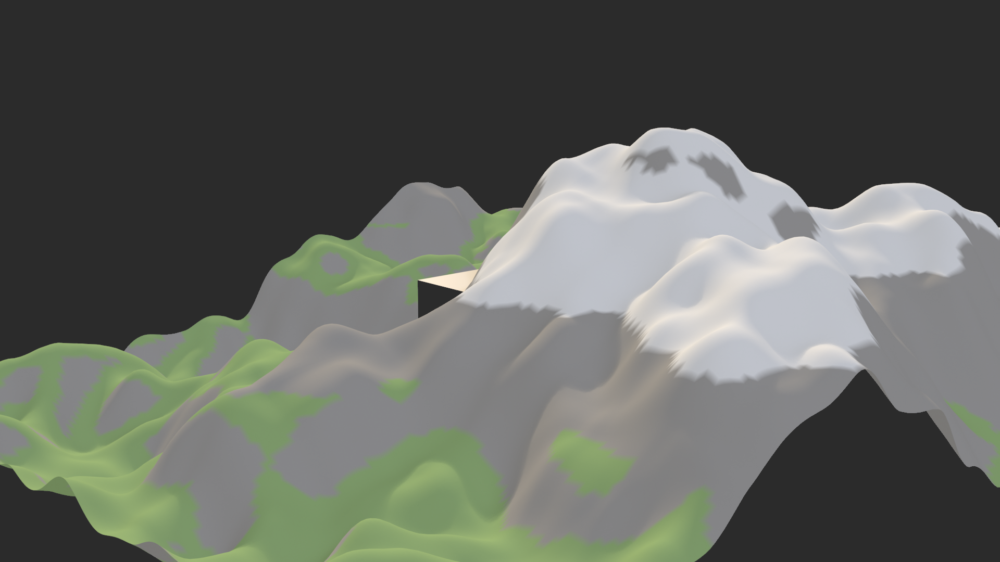
Time to put everything together! In this project, you'll build a complete procedural terrain system that combines noise displacement, material zones, and optimization techniques. This isn't a toy example—it's a production-ready system you can use in real projects. By the end, you'll have terrain that generates realistic mountains with proper material distribution (grass in valleys, rock on slopes, snow on peaks), all controllable through exposed parameters. Let's build something impressive!
🎯 Project Goals
What We're Building:
- Multi-layer noise displacement for realistic terrain
- Automatic material zones based on elevation and slope
- Erosion simulation using slope detection
- Fully parametric—adjust everything with sliders
- Optimized for both viewport and render
Skills Applied:
- Layered noise systems
- Field-based material assignment
- Normal/slope calculations
- Map Range for value remapping
- Parameter organization
Time: 30-45 minutes
Phase 1: Base Grid Setup
✅ Creating the Foundation
1. Scene Setup:
- Start fresh: File > New > General
- Delete default cube (we'll create terrain from scratch)
- Keep camera and light for preview
2. Create Plane Object:
Shift + A> Mesh > Plane- This will become our terrain
- Keep at origin (0, 0, 0)
3. Add Geometry Nodes Modifier:
- Select plane
- Switch to Geometry Nodes workspace (or add modifier manually)
- Click "New" to create node tree
- Default Group Input → Group Output appears
4. Create Subdivided Grid:
- Add: Mesh > Primitives > Grid
- Parameters:
- Size X: 100.0 (100 meter terrain)
- Size Y: 100.0
- Vertices X: 200 (high resolution for detail)
- Vertices Y: 200
- Note: This replaces input plane with dense grid
- Connect: Grid → Group Output (temporary, to verify)
- Result: Should see dense grid in viewport
Resolution Guidelines:
- Preview (fast): 100×100 vertices
- Good quality: 200×200 vertices (our choice)
- High detail: 500×500 vertices (slow but detailed)
- Tip: Expose vertex count as parameter for easy adjustment
Phase 2: Multi-Layer Noise Displacement
🎨 Building Realistic Height Variation
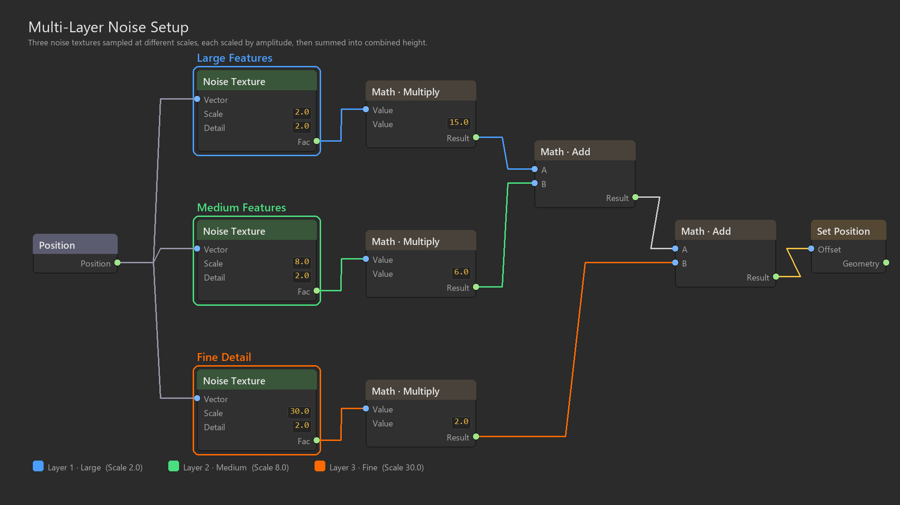
Strategy: Three noise layers at different scales for natural terrain.
1. Create Position Input:
- Add: Input > Scene > Position (or use Named Attribute "position")
- This provides point coordinates for noise sampling
2. Add Layer 1 (Large Features):
# Large mountains and valleys Add: Texture > Noise Texture Connect: Position → Noise Texture "Vector" Set parameters: - Scale: 2.0 (large features) - Detail: 4 (moderate complexity) - Roughness: 0.5 (default) - Distortion: 0.0 (clean for base) # Amplify output Add: Math node (Multiply) Connect: Noise "Fac" → Math "Value" Set: Math multiply by 15.0 (15 meter amplitude) Output: Layer 1 height
3. Add Layer 2 (Medium Features):
# Hills and ridges Add: Texture > Noise Texture Connect: Position → Noise Texture "Vector" Set parameters: - Scale: 8.0 (medium features) - Detail: 5 (more detail) - Roughness: 0.5 - Distortion: 0.0 # Amplify output (smaller amplitude than base) Add: Math node (Multiply) Connect: Noise "Fac" → Math "Value" Set: Math multiply by 6.0 (6 meter amplitude) Output: Layer 2 height
4. Add Layer 3 (Fine Detail):
# Surface texture and small bumps Add: Texture > Noise Texture Connect: Position → Noise Texture "Vector" Set parameters: - Scale: 30.0 (fine features) - Detail: 3 (subtle detail) - Roughness: 0.5 - Distortion: 0.5 (slight warping) # Amplify output (smallest amplitude) Add: Math node (Multiply) Connect: Noise "Fac" → Math "Value" Set: Math multiply by 2.0 (2 meter amplitude) Output: Layer 3 height
5. Combine All Layers:
# Add layers together Add: Math node (Add) Connect: Layer 1 → Math A, Layer 2 → Math B Output: Sum1 Add: Math node (Add) Connect: Sum1 → Math A, Layer 3 → Math B Output: Total Height (all layers combined)
Phase 3: Apply Displacement
💡 Vertical Offset Using Set Position
Method: Offset Z-coordinate of each point by height value.
1. Create Displacement Vector:
# Convert height (float) to vertical vector (0, 0, height) Add: Utilities > Vector > Combine XYZ Set X: 0.0 Set Y: 0.0 Connect: Total Height → Z Output: Displacement vector (only Z component)
2. Apply with Set Position:
Add: Geometry > Set Position Connect: Grid → Set Position "Geometry" Connect: Displacement vector → Set Position "Offset" # Note: Using "Offset" adds to current position (relative) Set Position → Output (temporarily, to see terrain)
3. Preview Result:
- What you should see: Grid transformed into mountainous terrain
- Large hills/valleys: Layer 1
- Medium ridges: Layer 2
- Surface texture: Layer 3
- If flat: Check amplitude multipliers, ensure connections correct
Phase 4: Material Zones (Elevation-Based)
✅ Automatic Material Distribution
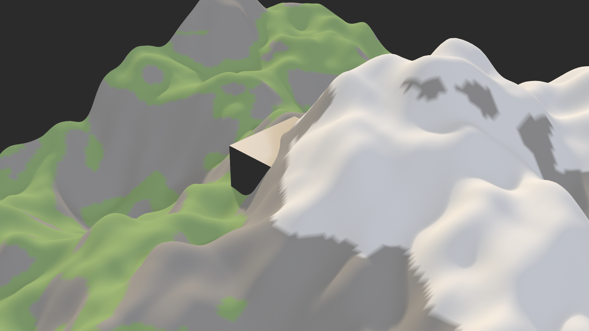
Goal: Grass in valleys, rock on mid-slopes, snow on peaks.
1. Calculate Current Height:
# After displacement, get new Z positions Add: Input > Position (this reads MODIFIED positions after Set Position) Add: Utilities > Vector > Separate XYZ Connect: Position → Separate XYZ Output: Use Z component (current height after displacement)
2. Define Material Zones by Height:
# Zone 1: Grass (low elevation, 0-8 meters) Height Z → Compare (Less Than) 8.0 → Grass zone # Zone 2: Rock (mid elevation, 8-18 meters) Height Z → Compare (Greater Than) 8.0 → Above grass Height Z → Compare (Less Than) 18.0 → Below snow Above grass AND Below snow → Rock zone # Zone 3: Snow (high elevation, 18+ meters) Height Z → Compare (Greater Than) 18.0 → Snow zone
3. Create Materials (In Shading):
- Switch to Shading workspace briefly
- Create three materials:
- Material 1: "Grass" (green, Base Color: #2d5016)
- Material 2: "Rock" (gray, Base Color: #5a5a5a)
- Material 3: "Snow" (white, Base Color: #f0f0f0)
- Assign to object: Select terrain, add all three material slots
- Return to Geometry Nodes workspace
4. Assign Materials Based on Zones:
# Set material index based on zone # Material indices: Grass=0, Rock=1, Snow=2 (order in material slots) Add: Geometry > Set Material Index Connect: Set Position output → Set Material Index "Geometry" # Create index field Add: Math node (Multiply) Grass zone → Math → × 0 = 0 (Grass material index) Add: Math node (Multiply) Rock zone → Math → × 1 = 1 (Rock material index) Add: Math node (Multiply) Snow zone → Math → × 2 = 2 (Snow material index) # Sum indices (only one zone true per point, so sum works) Add all indices → Set Material Index "Material Index"
Alternative Simpler Method:
# Use multiple Set Material nodes with selections Add: Geometry > Set Material Connect: Geometry → Set Material Connect: Grass zone → Set Material "Selection" Set: Material slot index = 0 (Grass) Add: Geometry > Set Material Connect: Previous → Set Material Connect: Rock zone → Set Material "Selection" Set: Material slot index = 1 (Rock) Add: Geometry > Set Material Connect: Previous → Set Material Connect: Snow zone → Set Material "Selection" Set: Material slot index = 2 (Snow) Final Set Material → Group Output
5. Preview Materials:
- Switch viewport shading to Material Preview or Rendered
- Should see green valleys, gray mid-elevation, white peaks
- If all one color: Check material assignments and zone logic
Phase 5: Slope-Based Material Blending
🎯 Adding Realism with Slope Detection
Concept: Steep slopes should show rock, regardless of elevation.
1. Calculate Slope:
# Surface normal tells us slope Add: Named Attribute, name: "normal" Add: Separate XYZ Connect: Normal → Separate XYZ Output: Normal.Z (1.0 = flat, 0.0 = vertical)
2. Define Steep Slope Mask:
# Steep = Normal.Z < 0.6 (about 53° or steeper) Normal.Z → Compare (Less Than) 0.6 → Steep slope mask
3. Override Material on Steep Slopes:
# On steep slopes, force rock material Add: Set Material (after elevation-based materials) Connect: Steep slope mask → "Selection" Set: Material index = 1 (Rock) # Result: Steep cliffs show rock, even if at grass or snow elevation
Final Material Logic:
- Base rule: Elevation determines material
- Override rule: Steep slopes = rock (overrides elevation)
- Result: Natural looking—valleys green, peaks white, cliffs gray
Phase 6: Parameter Exposure and Organization
💡 Making System User-Friendly
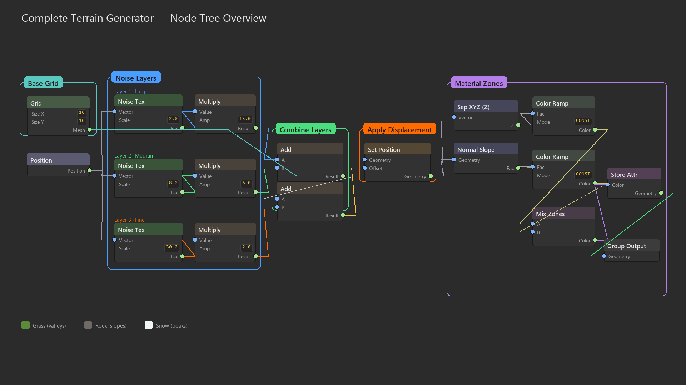
Key Parameters to Expose:
1. Noise Scales (3 parameters):
- Right-click "Scale" on each Noise Texture node
- "Expose as Input" for all three
- Rename in modifier panel:
- "Large Feature Scale" (default: 2.0)
- "Medium Feature Scale" (default: 8.0)
- "Fine Detail Scale" (default: 30.0)
2. Noise Amplitudes (3 parameters):
- Expose multiply values for each layer
- Rename:
- "Large Amplitude" (default: 15.0)
- "Medium Amplitude" (default: 6.0)
- "Fine Amplitude" (default: 2.0)
3. Material Thresholds (2 parameters):
- Expose height comparisons
- Rename:
- "Grass to Rock Height" (default: 8.0)
- "Rock to Snow Height" (default: 18.0)
4. Slope Threshold:
- Expose steep slope comparison value
- Rename: "Cliff Steepness" (default: 0.6)
- Lower = more cliffs, Higher = fewer cliffs
5. Grid Resolution (Optional but Recommended):
- Expose Grid "Vertices X" and "Vertices Y"
- Rename: "Resolution" (if both same value)
- Allows easy quality adjustment
Organization in Modifier Panel:
- Group 1: Resolution (top, most frequently changed)
- Group 2: Terrain Shape (scales and amplitudes)
- Group 3: Materials (elevation thresholds, slope)
- Drag to reorder for logical workflow
Phase 7: Testing and Refinement
✅ Experimentation and Polish
Test Variations:
1. Rolling Hills:
- Large Scale: 1.0 (very large features)
- Large Amplitude: 8.0 (gentle)
- Medium/Fine: Low values
- Result: Smooth, flowing landscape
2. Dramatic Mountains:
- Large Amplitude: 25.0 (tall peaks)
- All Detail: 6-8 (complex)
- Cliff Steepness: 0.5 (more rock faces)
- Result: Alpine terrain
3. Desert Dunes:
- Large Scale: 3.0, Amplitude: 10.0
- Fine Scale: 50.0, Amplitude: 0.5
- Materials: All sand color (override system)
- Result: Smooth dune-like terrain
Performance Testing:
- Preview: Resolution 50-100 (very fast)
- Good: Resolution 200 (our default)
- Render: Resolution 500+ (slow but beautiful)
- Test animation: Does it update smoothly when changing parameters?
🎉 Project 1 Complete!
What You Built:
- Multi-layer procedural terrain system
- Automatic material zones (elevation + slope)
- Fully parametric control
- Optimizable resolution
- Production-ready asset
Skills Mastered:
- Noise layering techniques
- Field-based material assignment
- Slope detection and usage
- Parameter organization
- System optimization
Save this! You'll use it in future projects!
🌿 Project 2: Ivy Growth System
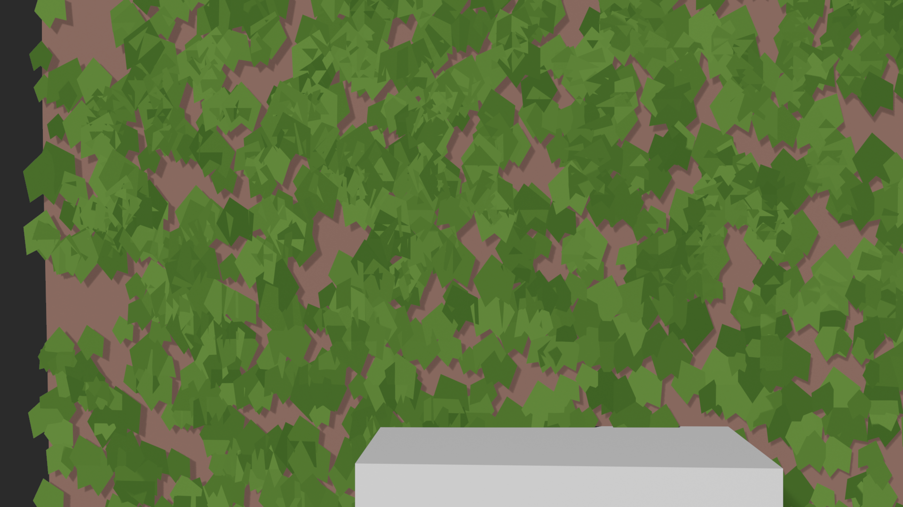
Now let's build something truly impressive—an ivy growth system that demonstrates proximity-based placement. This project showcases context-aware procedural modeling: ivy that only grows near surfaces, follows wall contours, and distributes naturally. This is the kind of system that makes viewers ask "how did you do that?" because it behaves intelligently. By the end, you'll have a reusable tool that can add organic growth to any object. Let's create something that feels alive!
🎯 Project Goals
What We're Building:
- Surface-aware distribution (only grows near walls/surfaces)
- Proximity-based density (thicker near surface, sparse away)
- Leaves that orient to surface normals
- Vines that follow surface contours
- Natural randomization for organic look
Skills Applied:
- Geometry Proximity node
- Distance-based filtering
- Normal-based alignment
- Noise-controlled distribution
- Multi-instance setups
Time: 30-40 minutes
Phase 1: Scene Preparation
✅ Setting Up the Environment
1. Create Target Surface (Wall):
Shift + A> Mesh > Cube- Scale it to wall-like proportions:
S, thenX3,Z2 - Result: Wide, tall, thin wall (6m × 2m × 2m)
- Rename: "Wall" (for clarity)
- This is our ivy growth target
2. Create Ivy Controller Object:
Shift + A> Mesh > Plane- Position: Behind/around the wall
- Scale larger than wall:
S5 - This defines the "growth zone" for ivy
- Rename: "IvySystem"
3. Create Ivy Leaf Template:
- Simple approach: Use plane as leaf (we'll instance this)
Shift + A> Mesh > Plane- Scale small:
S0.1 (10cm leaf) - Optional: Add material (green color)
- Move away from scene:
G,X20 (we'll reference it, not see original) - Rename: "IvyLeaf"
- Advanced option: Model actual leaf shape (mesh edit mode)
4. Setup Node Tree:
- Select "IvySystem" plane
- Add Geometry Nodes modifier
- Click "New" to create tree
- We'll build system on this object
Phase 2: Create Distribution Volume
📍 Defining Growth Zone
Strategy: Distribute points in volume, then filter to near-surface points only.
1. Create Dense Point Cloud:
# Convert input plane to dense points Add: Mesh > Operations > Triangulate (optional, for even distribution) Add: Point > Distribute Points on Faces Connect: Group Input → Distribute Points Set Distribute Points: - Distribute Method: Random - Density: 200.0 (200 points per m²) - Seed: 0 # Result: Dense point cloud filling plane area
2. Add Vertical Spread (Optional Volume):
# Randomize Z position to create volume, not just flat plane Add: Input > Index Add: Utilities > Random Value Connect: Index → Random Value "ID" Set Random Value: - Data Type: Vector - Min: (0, 0, -1) - Max: (0, 0, 1) # Offset points vertically by random amount Add: Geometry > Set Position Connect: Distribute Points → Set Position "Geometry" Connect: Random Value → Set Position "Offset" # Result: Points spread in 3D volume around plane (±1m vertically)
Why Volume?
- Ivy doesn't grow perfectly flat
- Some leaves closer to wall, some further
- Creates depth and natural variation
- We'll filter to near-surface anyway
Phase 3: Proximity Filtering
💡 Keep Only Near-Surface Points
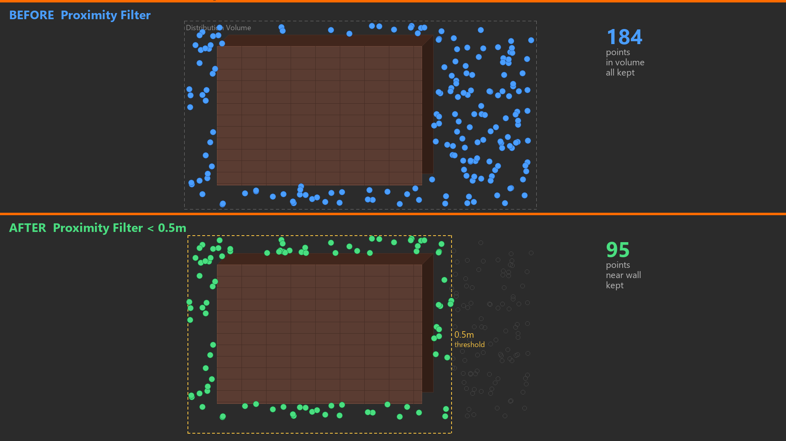
1. Reference Wall Object:
# Bring wall geometry into node tree Add: Input > Object Info Set Object Info: Select "Wall" object from dropdown Output: Wall geometry available for proximity calculations
2. Calculate Distance to Wall:
Add: Geometry > Geometry Proximity Connect: Set Position output (points) → Geometry Proximity "Geometry" Connect: Object Info "Geometry" (wall) → Geometry Proximity "Target" Outputs available: - Distance: How far each point from wall - Position: Nearest point on wall surface - Normal: Surface normal at nearest point # We'll use all three!
3. Create Distance Mask:
# Keep only points within 0.5m of wall Add: Utilities > Math > Compare (Less Than) Connect: Geometry Proximity "Distance" → Compare "A" Set: Compare "B" = 0.5 Output: Boolean mask (True = close to wall, False = far away)
4. Delete Far Points:
Add: Geometry > Delete Geometry Connect: Points → Delete Geometry "Geometry" Connect: Compare output (close to wall) → Delete Geometry "Selection" Set: Domain = Point # Result: Only points near wall surface remain # Visual: Points should hug wall contours
Adjust Distance Threshold:
- 0.2m: Tight, flat against wall
- 0.5m: Good default (some depth)
- 1.0m: Loose, billowy ivy
- Tip: Expose as parameter "Growth Thickness"
Phase 4: Density Variation with Noise
✅ Natural Clumping Pattern
Problem: Uniform density looks artificial. Nature grows in patches.
1. Sample Noise at Point Positions:
# Before deleting far points, add noise selection Add: Input > Position (reads point positions) Add: Texture > Noise Texture Connect: Position → Noise Texture "Vector" Set Noise Texture: - Scale: 5.0 (medium clumps) - Detail: 3 - Roughness: 0.5 Output: Noise values (0-1) per point
2. Threshold Noise for Patch Selection:
# Keep only 40% of points (where noise > 0.6) Add: Math > Compare (Greater Than) Connect: Noise "Fac" → Compare "A" Set: Compare "B" = 0.6 Output: Patch mask (True in dense areas, False in sparse)
3. Combine with Distance Mask:
# Point must be BOTH close to wall AND in patch Add: Boolean Math > AND Connect: Distance mask (close to wall) → AND "A" Connect: Patch mask (noise areas) → AND "B" Output: Combined mask Combined mask → Delete Geometry "Selection" # Result: Patches of ivy near wall, natural distribution
Density Control:
- Change initial Distribute Points density: More/fewer ivy
- Change noise threshold: Lower = denser (0.3), Higher = sparser (0.8)
- Expose both as parameters
Phase 5: Snap Points to Surface
🎯 Perfect Wall Adherence
Problem: Points near wall but not exactly on it. Leaves will float!
Solution: Use Proximity "Position" Output
# Geometry Proximity already calculated nearest point on wall Add: Geometry > Set Position Connect: Filtered points → Set Position "Geometry" Connect: Geometry Proximity "Position" → Set Position "Position" # Note: Using "Position" input (absolute), not "Offset" # Result: All points moved to exact surface positions on wall # Leaves will sit flush against surface
Optional: Add Small Offset (Prevent Z-Fighting)
# Offset slightly along surface normal to avoid surface overlap Add: Vector Math > Scale Connect: Geometry Proximity "Normal" → Scale "Vector" Set: Scale = 0.02 (2cm offset) Add: Vector Math > Add Connect: Geometry Proximity "Position" → Add "A" Connect: Scaled normal → Add "B" # Use offset position instead Offset position → Set Position "Position"
Phase 6: Orient Leaves to Surface
💡 Natural Leaf Alignment
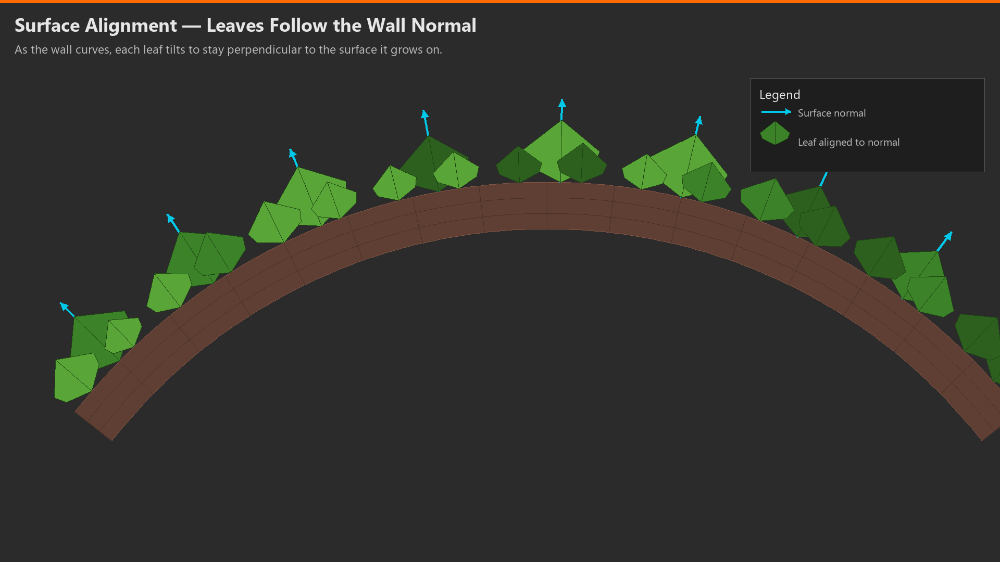
Goal: Leaves face outward from wall, not all pointing same direction.
1. Instance Leaf on Points:
# Reference leaf object Add: Input > Object Info Set: Object = "IvyLeaf" # Instance on filtered points Add: Instances > Instance on Points Connect: Set Position output (snapped points) → Instance on Points "Points" Connect: Object Info "Geometry" (leaf) → Instance on Points "Instance"
2. Align to Surface Normal:
# Use captured normal from Geometry Proximity Add: Utilities > Align Euler to Vector Connect: Geometry Proximity "Normal" → Align Euler to Vector "Vector" Set: Axis = Z (leaf faces normal direction) Set: Pivot = Individual Origins Connect: Align output → Instance on Points "Rotation" # Result: Leaves perpendicular to wall surface
3. Add Random Twist:
# Random rotation around normal axis Add: Input > Index Add: Utilities > Random Value (Float) Connect: Index → Random Value "ID" Set: Min = 0, Max = 360 (degrees) # Convert to radians Add: Math > Radians Connect: Random Value → Radians Add: Utilities > Rotate Euler Connect: Align Euler output → Rotate Euler "Rotation" Connect: Radians output → Rotate Euler "Angle" Connect: Normal → Rotate Euler "Axis" Final rotation → Instance on Points "Rotation" # Result: Leaves face outward, each with unique twist
Phase 7: Scale Variation
✅ Natural Size Distribution
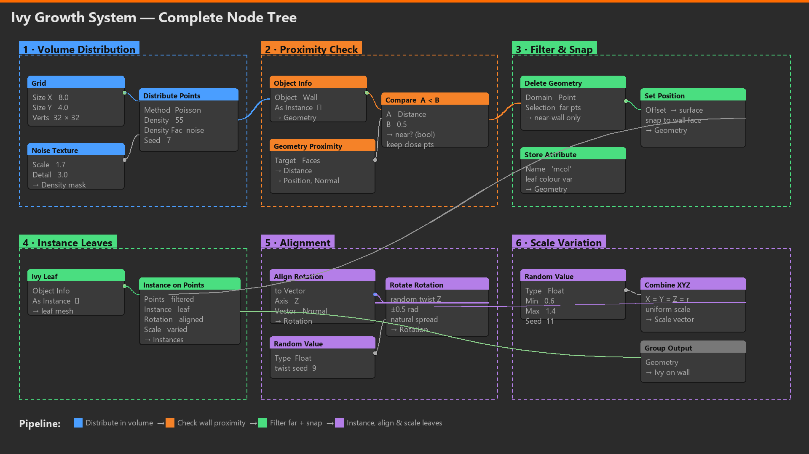
1. Random Scale per Leaf:
Add: Input > Index Add: Utilities > Random Value (Float) Connect: Index → Random Value "ID" Set: Min = 0.7, Max = 1.3 (70-130% of base size) Connect: Random Value → Instance on Points "Scale" (or use Scale Instances node) # Result: Natural size variation
2. Height-Based Scale (Optional):
# Larger leaves at bottom, smaller at top (climbing growth) Add: Separate XYZ (from point positions) Use Z component Add: Map Range Connect: Z → Map Range "Value" Set: From Min = -2, From Max = 2 (wall height range) Set: To Min = 1.2, To Max = 0.8 # Multiply with random variation Height scale × Random scale → Final scale
Phase 8: Add Vine Elements (Optional Enhancement)
🌱 Adding Connecting Stems
Simple Approach: Thin Cylinders
# Create thin cylinder for vine segment Add: Mesh > Mesh Cylinder Set: Radius = 0.01 (1cm thin vine) Set: Depth = 0.3 (30cm segment) Set: Vertices = 6 (low poly, faster) # Instance vines on subset of points (not all leaves have visible stems) Add: Random Value (per point) → Compare (> 0.7) → 30% of points # Instance on selected points Vine selection → Instance on Points (Cylinder) # Align to surface normal (like leaves) Normal → Align Euler to Vector → Vine rotation # Random twist variation Random rotation → Vine instances # Join with leaves Join Geometry (Leaves + Vines) → Output
Advanced: Curve-Based Vines
- Create curves between points (Mesh to Curve)
- Use Curve to Mesh with circular profile
- More complex but creates flowing vine tendrils
- Good for detailed close-ups
Phase 9: Parameter Exposure
💡 User-Friendly Controls
Key Parameters to Expose:
- Growth Density: Distribute Points "Density" (50-500)
- Growth Thickness: Proximity distance threshold (0.1-1.0)
- Patch Size: Noise texture "Scale" (1.0-20.0)
- Coverage: Noise threshold (0.3-0.8)
- Leaf Size Min/Max: Random Value scale bounds
- Wall Object: Object Info selector (change target surface)
- Seed: Random Value seed (different patterns)
Organization:
- Section 1: Target (Wall object selection)
- Section 2: Distribution (Density, thickness, coverage)
- Section 3: Appearance (Leaf size, seed)
- Section 4: Optimization (Resolution toggle, LOD)
Testing and Variations
✅ Experimentation Ideas
Test 1: Different Target Surfaces
- Change "Wall" object to sphere → Ivy covers sphere
- Use complex mesh (building, statue) → Ivy adapts
- System works on any geometry!
Test 2: Extreme Density
- Density = 1000, Coverage = 0.2 → Dense ivy blanket
- Density = 50, Coverage = 0.8 → Sparse, scattered
- Find sweet spot for your scene
Test 3: Multiple Surfaces
- Join multiple objects (walls, columns)
- Use joined mesh as single target
- Ivy covers entire architectural complex
Variation Ideas:
- Moss: Much smaller leaves, denser, closer to surface (0.05m)
- Creeping vines: Thinner leaves, less coverage
- Hanging vines: Negative Z offset, longer vine elements
- Flowers: Additional instance type, different colors, noise-based placement
💭 The Magic of Context: This ivy system demonstrates the power of context-aware procedural modeling. The ivy "knows" where the wall is, adapts to its shape, and distributes naturally. Change the wall to any shape—a sphere, a dragon statue, a building—and the ivy adapts instantly. This is what separates basic scattering from intelligent systems. When your procedural assets respond to their environment, they transcend "obviously CG" and become believable elements of the scene. That's the goal!
🎉 Project 2 Complete!
What You Built:
- Context-aware ivy growth system
- Proximity-based distribution
- Surface-aligned orientation
- Natural noise-based variation
- Reusable on any geometry
Skills Mastered:
- Geometry Proximity workflows
- Multi-condition filtering
- Normal-based alignment
- Instance orientation control
- Noise-based organic distribution
This system is portfolio-worthy!
🏢 Project 3: Parametric Building Generator
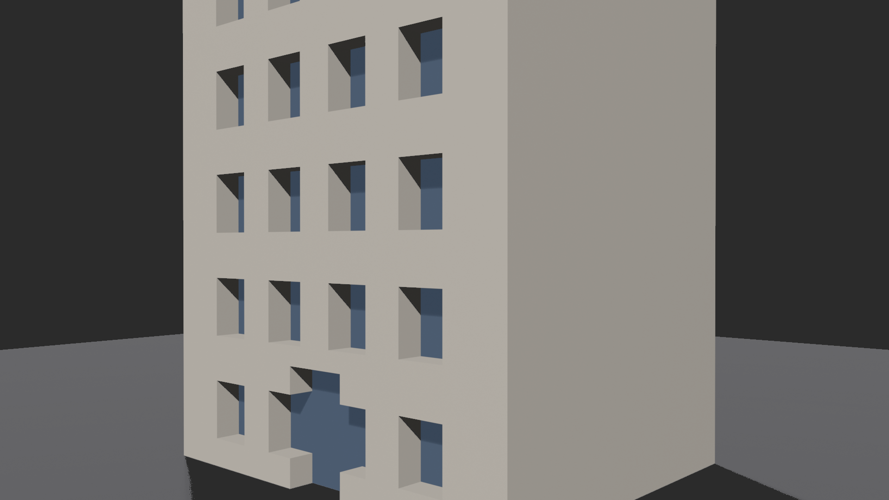
For our final project, we'll create a parametric building generator—a system that creates complete buildings with windows, doors, and roofs from just a few parameters. This project demonstrates how to combine mesh operations, boolean techniques, and complex parameter systems into a practical architectural tool. By the end, you'll have a building generator that can create everything from small houses to multi-story towers with a few slider adjustments. This is the kind of tool used in production for rapid prototyping and background architecture. Let's build something architectural!
🎯 Project Goals
What We're Building:
- Parametric building with controllable dimensions
- Automatic window grid generation
- Door placement at ground level
- Multiple roof style options
- Floor count control with proper scaling
Skills Applied:
- Mesh boolean operations
- Grid-based distribution
- Transform and scale control
- Conditional geometry (roof types)
- Modular system design
Time: 40-50 minutes • Most Complex Project
Phase 1: Base Building Structure
✅ Creating the Foundation
1. Scene Setup:
- New scene or clean slate
- Add Plane:
Shift + A> Mesh > Plane - Add Geometry Nodes modifier, create new tree
2. Create Building Box:
# Main building structure Add: Mesh > Cube # Set initial dimensions Add: Transform Geometry Connect: Cube → Transform Geometry Set Scale: - X: 5.0 (10m wide) - Y: 4.0 (8m deep) - Z: 4.0 (8m tall - we'll multiply by floor count) Set Translation: - X: 0 - Y: 0 - Z: 4.0 (raise so bottom at ground level) # Result: Building-sized box centered above origin
3. Expose Dimension Parameters:
- Right-click Transform "Scale" → Expose as Input
- Rename: "Building Width", "Building Depth", "Floor Height"
- Right-click Transform "Translation" Z → Expose
- Rename: "Ground Offset"
Phase 2: Floor Count System
📊 Parametric Height Control
Challenge: Building height should scale with floor count.
1. Add Floor Count Parameter:
# Create floor count input in Group Input node Add socket: "Floor Count" (Integer, default: 3) # Calculate total height Add: Math node (Multiply) Connect: Floor Count → Math "Value" Set: Multiply by Floor Height (from scale parameter) Output: Total building height
2. Apply Height to Building:
# Update Z scale with calculated height Connect: Total height → Transform Geometry "Scale" Z component # Adjust Z translation (half of height, so bottom at ground) Add: Math (Divide by 2) Connect: Total height → Divide Connect: Result → Transform "Translation" Z # Result: Building scales with floor count # 1 floor = short, 10 floors = tower
Phase 3: Window Grid Generation
💡 Automatic Window Placement
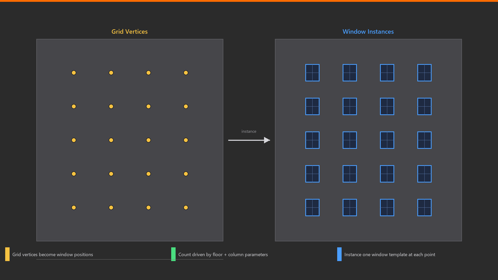
Strategy: Create grid on building face, instance windows at grid points.
1. Create Window Template:
# Simple window = small cube (we'll boolean subtract it) Add: Mesh > Cube Add: Transform Geometry Connect: Cube → Transform Set Scale: (0.8, 0.2, 1.0) # 0.8m wide, 0.2m deep (cut depth), 1m tall # Window will be subtracted from wall, so depth = wall penetration
2. Create Grid for Window Positions:
# Grid on XZ plane (front face) Add: Mesh > Grid Set parameters: - Size X: Building Width × 0.8 (80% of width, margins on sides) - Size Y: Total Height × 0.9 (90% of height, margin top/bottom) - Vertices X: Floor Count × 2 (2 windows per floor horizontally) - Vertices Y: Floor Count (one row per floor) # Position grid on building face Add: Transform Geometry Connect: Grid → Transform Set Translation: - X: 0 - Y: Building Depth / 2 + 0.1 (just outside front face) - Z: Total Height / 2 (center vertically)
3. Convert Grid to Points:
# Grid vertices become window positions Add: Mesh > Mesh to Points Connect: Transformed Grid → Mesh to Points Output: Point at each grid vertex = window location
4. Instance Windows at Points:
Add: Instances > Instance on Points Connect: Grid points → Instance on Points "Points" Connect: Window template → Instance on Points "Instance" # Result: Windows arrayed on building face
Phase 4: Boolean Operations (Window Cutouts)
✅ Subtracting Windows from Walls
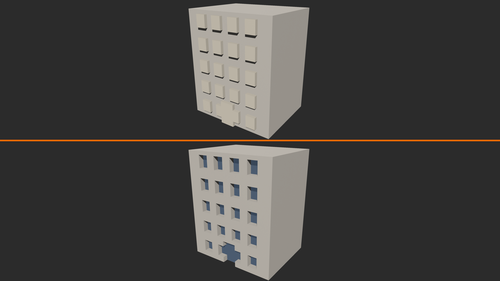
1. Realize Window Instances:
# Boolean needs real geometry, not instances Add: Instances > Realize Instances Connect: Window instances → Realize Instances Output: Actual window meshes
2. Join All Windows:
# Boolean faster with single object than many Add: Geometry > Join Geometry Connect: Realized windows → Join Geometry Output: Single mesh containing all windows
3. Apply Boolean Difference:
Add: Mesh > Mesh Boolean Connect: Building box → Mesh Boolean "Mesh 1" Connect: Joined windows → Mesh Boolean "Mesh 2" Set: Operation = Difference Set: Solver = Fast (usually sufficient) Output: Building with window holes cut out!
Performance Note:
- Boolean operations are expensive
- Limit window count for viewport performance
- Expose "Window Resolution" to control density
- Preview: Low resolution, Render: High resolution
Phase 5: Door Addition
🚪 Ground-Level Entry
1. Create Door Template:
Add: Mesh > Cube Add: Transform Geometry Set Scale: (1.2, 0.2, 2.0) # 1.2m wide, 2m tall (standard door), 0.2m depth Set Translation: - X: 0 (centered) - Y: Building Depth / 2 + 0.1 (at building face) - Z: 1.0 (half door height, so bottom at ground)
2. Boolean Door from Building:
# Another boolean operation Add: Mesh Boolean Connect: Building with windows → Mesh Boolean "Mesh 1" Connect: Door template → Mesh Boolean "Mesh 2" Set: Operation = Difference Output: Building with windows and door
Optional: Add Door Frame
# Slightly larger cube, different material Create door frame geometry (1.3m × 2.1m) Don't boolean, just Join Geometry with building Assign different material (wood, metal) # Result: Door opening with visible frame
Phase 6: Roof System
💡 Multiple Roof Types
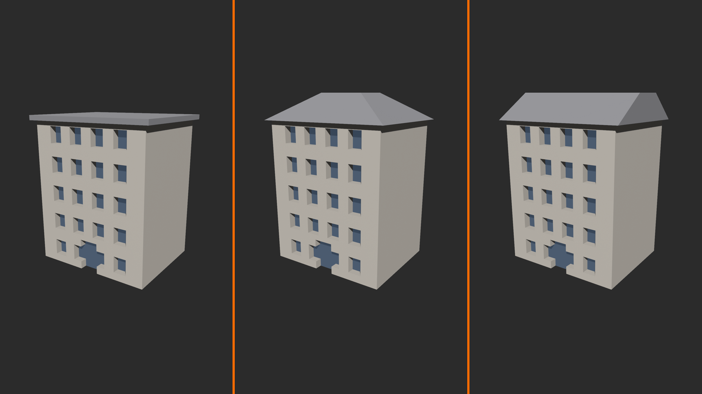
Option 1: Flat Roof (Simple)
# Just a scaled cube on top Add: Mesh > Cube Add: Transform Geometry Set Scale: - X: Building Width + 0.2 (slight overhang) - Y: Building Depth + 0.2 - Z: 0.3 (30cm thick roof) Set Translation: - Z: Total Height + 0.15 (on top of building) # Join with building
Option 2: Peaked Roof
# Pyramid-like shape Add: Mesh > Cone Set parameters: - Vertices: 4 (square base = pyramid) - Radius 1: Building Width × 0.7 (base size) - Radius 2: 0 (pointed top) - Depth: 3.0 (roof height) Add: Transform Geometry Set Rotation: X = 0, Y = 0, Z = 45° (align to building) Set Translation: Z = Total Height + 1.5 (on top) # Join with building
Option 3: Gabled Roof
# Angled roof (residential style) # Create with two rotated cubes forming peak # Left slope Add: Cube → Transform Scale: (Width/2, Depth+0.2, 0.2) Rotate: Y = 30° (slope angle) Translate: X = -Width/4, Z = Height + 2 # Right slope Mirror of left slope (X = Width/4, Y = -30°) # Join both slopes with building
Roof Selection System:
# Add integer parameter: "Roof Type" (0, 1, or 2) Group Input: Roof Type (Integer, default: 0) # Use Switch node to select roof type Add: Utilities > Switch (Geometry type) Connect: Roof Type → Switch "Switch" Connect: Flat roof → Input 0 Connect: Peaked roof → Input 1 Connect: Gabled roof → Input 2 Switch output → Join with building
Phase 7: Material Zones
✅ Assigning Different Materials
Create Materials:
- Material 1: "Wall" (brick/concrete color)
- Material 2: "Roof" (darker, different texture)
- Material 3: "Trim" (window frames, optional)
Assign to Geometry:
# Building body = Wall material Add: Geometry > Set Material Connect: Building (after booleans) → Set Material Set: Material index = 0 (Wall) # Roof = Roof material Add: Geometry > Set Material Connect: Roof geometry → Set Material Set: Material index = 1 (Roof) # Join all parts Join Geometry → Final output
Advanced: Height-Based Material Zones
# Different material for ground floor vs upper floors Position.Z → Compare (Less Than) Floor Height → Ground floor mask Ground floor mask → Set Material (index 0) NOT ground floor → Set Material (index 2) # Result: Different colored floors
Phase 8: Parameter Organization
🎛️ User Interface Design
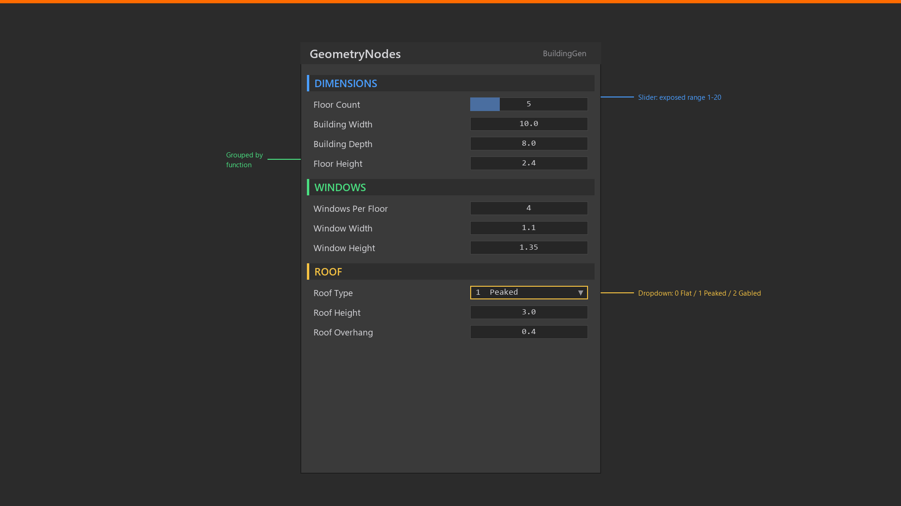
Organized Parameter Groups:
Group 1: Basic Dimensions
- Floor Count (Integer, 1-20, default: 3)
- Building Width (Float, 3-20, default: 10)
- Building Depth (Float, 3-20, default: 8)
- Floor Height (Float, 2.5-5, default: 4)
Group 2: Windows
- Windows Per Floor (Integer, 1-10, default: 2)
- Window Width (Float, 0.5-2.0, default: 0.8)
- Window Height (Float, 0.5-2.0, default: 1.0)
- Window Margin (Float, 0.5-2.0, default: 1.0)
Group 3: Roof
- Roof Type (Integer, 0-2, default: 0)
- 0 = Flat
- 1 = Peaked
- 2 = Gabled
- Roof Height (Float, 1-5, default: 3)
- Roof Overhang (Float, 0-1, default: 0.2)
Group 4: Details
- Door Width (Float, 0.8-2.0, default: 1.2)
- Door Height (Float, 1.5-3.0, default: 2.0)
- Include Balconies (Boolean, default: False)
Testing and Variations
💡 Experimentation
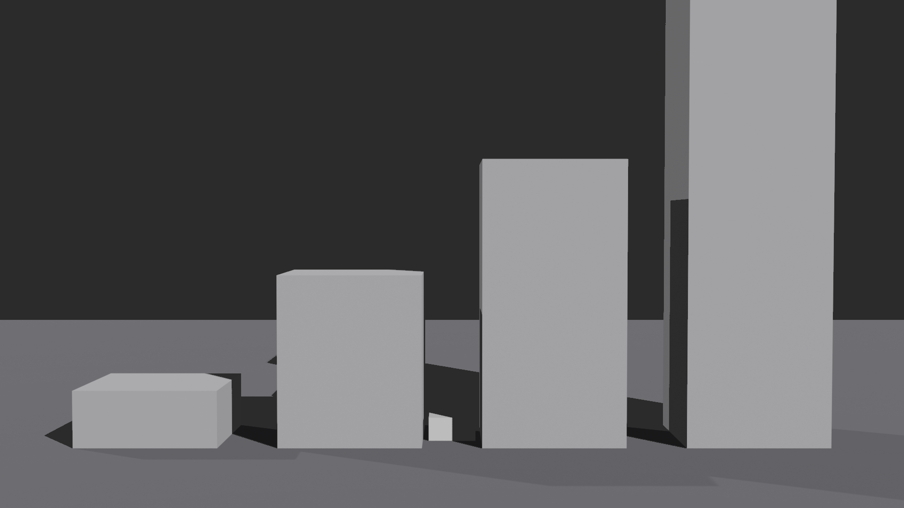
Test Configurations:
Small House:
- Floors: 2
- Width: 6m, Depth: 5m
- Windows: 2 per floor
- Roof: Gabled
- Result: Cozy residential
Office Tower:
- Floors: 15
- Width: 12m, Depth: 10m
- Windows: 4 per floor
- Roof: Flat
- Result: Modern skyscraper
Warehouse:
- Floors: 1
- Width: 20m, Depth: 15m
- Floor Height: 6m
- Windows: Few, large
- Result: Industrial building
Enhancement Ideas
✅ Taking It Further
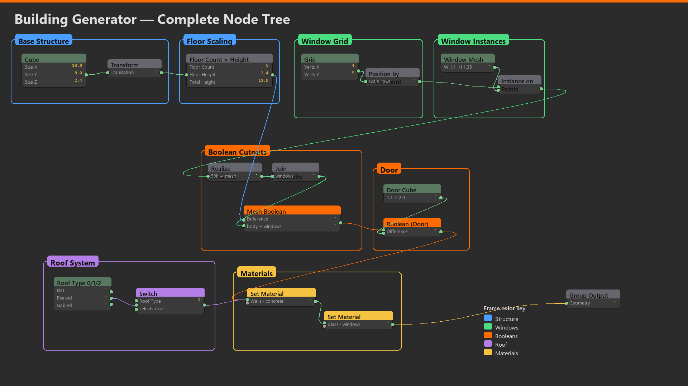
1. Balconies:
- Add small protruding boxes on certain floors
- Instance railings at balcony edges
- Height-based: Only above ground floor
2. Architectural Details:
- Corner pillars (scaled cylinders)
- Window shutters (instanced on window grid)
- Entrance canopy above door
- Rooftop features (vents, antennas)
3. Multiple Facades:
- Different window patterns per face
- Front vs side vs back
- Use position-based selection (X, Y coordinates)
4. Damage/Weathering:
- Random window breaks (some windows boolean, some not)
- Noise-based material variation (wear patterns)
- Partial roof collapse (delete faces)
5. City Block Generator:
- Array this building system
- Randomize parameters per instance
- Create entire city blocks
💭 Parametric Design Philosophy: This building generator exemplifies parametric design thinking. Instead of modeling one building, you created a system that generates infinite building variations. Change a slider, get a house. Change it more, get a tower. This is how architectural visualization studios work—create flexible systems, rapidly iterate, deliver variety. The initial setup takes longer than modeling one building, but the payoff is immense. One system = unlimited buildings. That's the power of procedural modeling!
🎉 Project 3 Complete!
What You Built:
- Complete parametric building system
- Automatic window grid generation
- Boolean-based door/window cutouts
- Multiple roof styles with switching
- Organized parameter interface
Skills Mastered:
- Mesh Boolean operations
- Grid-based instance distribution
- Complex parameter systems
- Conditional geometry (switches)
- Modular procedural design
You've completed all three advanced projects!
⚡ Optimization and Best Practices
Building complex procedural systems is one thing—making them performant is another. As your node trees grow in sophistication, viewport performance can suffer without proper optimization. Professional procedural artists know that the best systems are both powerful AND fast. In this section, we'll cover strategies for keeping your procedural systems responsive, techniques for debugging performance bottlenecks, and best practices that separate amateur from professional work. Let's make your systems production-ready!
Performance Fundamentals
💡 Understanding the Bottlenecks
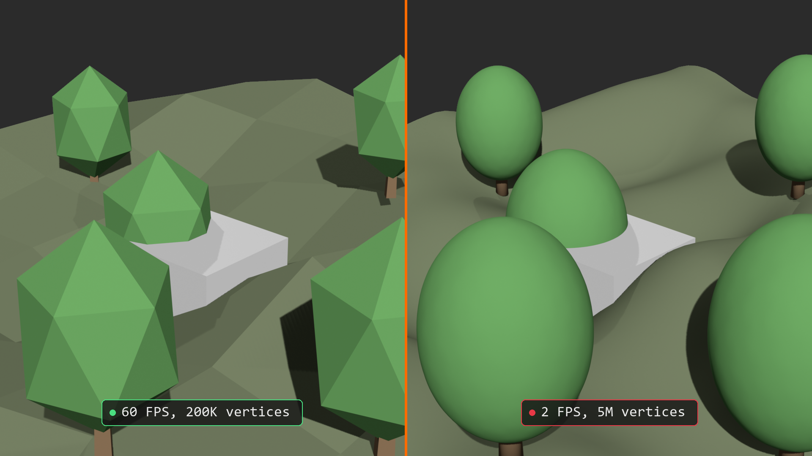
What Slows Down Geometry Nodes:
1. High Element Counts
- Problem: Processing millions of points/faces
- Example: 1000×1000 grid = 1 million vertices
- Impact: Every operation processes all elements
- Solution: Reduce resolution for viewport, increase for render
2. Realized Instances
- Problem: Converting 1000 instances to 1000 real meshes
- Memory: Instance = reference (tiny), Realized = full copy (huge)
- Impact: Viewport lag, memory exhaustion
- Solution: Keep as instances until absolutely necessary
3. Boolean Operations
- Problem: Complex mesh intersections are expensive
- Example: Subtracting 100 windows from building
- Impact: Slow recalculation on parameter changes
- Solution: Simplify boolean meshes, join before boolean
4. Proximity Calculations
- Problem: Checking distances between many points
- Complexity: O(n×m) comparisons (points × target faces)
- Impact: Scales poorly with point count
- Solution: Pre-filter with cheap tests, use simplified targets
5. Complex Noise Evaluation
- Problem: High detail noise on many points
- Example: Detail = 10, evaluated at 1M points
- Impact: CPU-intensive calculations
- Solution: Lower detail for viewport, optimize scale
Optimization Strategies
✅ Practical Performance Techniques
Strategy 1: LOD (Level of Detail) System
# Add quality multiplier parameter Group Input: "Quality" (Float, 0.1 to 1.0, default 0.3) # Apply to resolution parameters Grid Vertices X: Base resolution × Quality Distribution Density: Base density × Quality Noise Detail: Base detail × Quality # Usage: # Viewport: Quality = 0.3 (fast preview) # Render: Quality = 1.0 (full detail) # Animation: Quality = 0.5 (balanced)
Strategy 2: Viewport-Only Simplification
# Use Switch node with render detection Add: Utilities > Switch Add: Input > Is Viewport (boolean - true in viewport, false in render) Connect: Is Viewport → Switch "Switch" Connect: Low detail geometry → Switch Input 0 (viewport) Connect: High detail geometry → Switch Input 1 (render) # Automatically uses appropriate detail level
Strategy 3: Progressive Filtering
# Filter in stages: cheap tests first, expensive last # Stage 1: Bounding box (very cheap) Position.X between -5 and 5 → Rough X bounds Position.Y between -5 and 5 → Rough Y bounds X bounds AND Y bounds → Rough selection (fast!) # Stage 2: Proximity (only on rough selection) Rough selection → Delete far points Remaining points → Geometry Proximity (expensive but fewer points) # Result: Expensive operation on subset, not all points
Strategy 4: Instance Simplification
# Use different instance geometry for viewport vs render Add: Object Info (low poly proxy) Add: Object Info (high poly detailed) Add: Switch with Is Viewport Viewport: Low poly instance Render: High poly instance # Example: Tree proxy = simple cone, render = full 10K poly tree
Strategy 5: Mute Debugging Nodes
- Remove Viewer nodes after debugging
- Mute (
M) unused branches - Delete disconnected nodes (they still evaluate!)
- Clean up before final render
Memory Management
💾 Staying Within Memory Limits
Memory-Hungry Operations:
1. Realize Instances (Biggest Culprit)
- Instance: 1KB memory × 1000 = 1MB
- Realized: 100KB geometry × 1000 = 100MB
- Rule: Only realize when you must (editing individual copies)
2. High-Resolution Meshes
- 1000×1000 grid = 1M vertices = ~40MB
- Multiple high-res meshes = memory adds up
- Use adaptive resolution (detail where needed, low elsewhere)
3. Duplicate Geometry
- Avoid creating multiple copies of same geometry
- Reuse node outputs (one calculation, multiple uses)
- Use Join Geometry efficiently
Memory-Efficient Patterns:
# Bad: Duplicate calculations Position → Noise 1 → Effect A Position → Noise 2 (same settings) → Effect B # Two noise evaluations, wasteful # Good: Reuse calculation Position → Noise → Both Effect A and Effect B # One noise evaluation, efficient
Profiling and Debugging Performance
💡 Finding Bottlenecks
Technique 1: Binary Search Method
- Mute half of your node tree
- If fast: Problem in muted half
- If still slow: Problem in active half
- Repeat on problem half (mute half of half)
- Narrow down to specific slow node/branch
Technique 2: Element Count Monitoring
- Use Spreadsheet Editor to check counts
- Click node → See point/face/instance count
- Look for unexpected explosions:
- 100 points → 10,000 points? Find why!
- Usually: Too high distribution density
Technique 3: Timing Test
# Change parameter, observe update speed # Fast (<0.1s): Good # Medium (0.1-0.5s): Acceptable # Slow (0.5-2s): Optimization needed # Very slow (2s+): Major problem # Test with different quality settings # Identify which operations scale poorly
Common Bottleneck Nodes:
- Mesh Boolean: Complex intersections
- Geometry Proximity: High point counts
- Distribute Points on Faces: Very high density
- Realize Instances: Many instances
- Subdivision Surface: High subdivision levels
Best Practices Summary
✅ Professional Workflow Guidelines
1. Structure and Organization
- Frame nodes: Group related nodes visually (
Ctrl + J) - Reroute connections: Keep tree clean (
Shift + Right-click) - Label frames: "Distribution System", "Material Assignment", etc.
- Left-to-right flow: Input (left) → Processing (middle) → Output (right)
2. Parameter Design
- Sensible defaults: System works without adjustment
- Useful ranges: Min/max prevent broken values
- Logical grouping: Related parameters together
- Clear names: "Tree Density", not "Value_12"
- Tooltips: Use description field for guidance
3. Testing and Validation
- Test extremes: Min/max values, edge cases
- Test performance: Different quality settings
- Test variations: Different parameter combinations
- Test at scale: Does it work with 10× more elements?
4. Documentation
- Frame labels: Explain what sections do
- Node notes: Add annotations for complex logic
- External doc: Parameter guide for users
- Version notes: Track changes and improvements
5. Reusability
- Node groups: Package reusable subsystems
- Asset library: Save useful setups
- Modular design: Swap components easily
- Generic inputs: Works on different objects
Production Pipeline Integration
🏭 Professional Workflows
Working with Teams:
- Naming conventions: Consistent across projects
- Asset management: Version control for node trees
- Documentation: How to use, what parameters do
- Testing protocols: QA before delivery
Render Farm Considerations:
- External files: Avoid absolute paths
- Memory limits: Optimize for farm machines
- Deterministic: Same seed = same result
- Frame independence: Each frame self-contained
Archival and Maintenance:
- Save versions: Keep working copies
- Document dependencies: External objects, materials
- Simplify for handoff: Clean up before delivery
- Future-proof: Comment complex logic
Performance Checklist
⚠️ Pre-Delivery Optimization
Before considering system "done," verify:
□ Viewport Performance
- Parameter changes update in < 0.5 seconds?
- Orbit/pan smooth with system active?
- Quality parameter properly reduces load?
□ Memory Usage
- Instances used where possible?
- Realize Instances only when necessary?
- Reasonable element counts (< 1M points)?
□ Node Tree Health
- No disconnected/unused nodes?
- Viewer nodes removed?
- Clean visual layout?
- Frames/labels for major sections?
□ Parameter Interface
- All important values exposed?
- Logical order and grouping?
- Sensible defaults?
- Min/max ranges prevent breaking?
□ Testing Complete
- Extreme parameter values tested?
- Works on different input geometry?
- Renders without errors?
- Animation-ready (if applicable)?
💭 Optimization is Caring: When you optimize your procedural systems, you're showing respect for your users (including future you!). Fast systems invite experimentation. Clean systems invite modification. Well-documented systems invite collaboration. The extra time spent optimizing and organizing pays dividends every time someone uses your work. In production, the difference between "clever hack" and "professional tool" is often just polish—and optimization is a key part of that polish!
🎯 Optimization Summary
- Performance bottlenecks: High counts, realized instances, booleans, proximity
- LOD strategy: Quality multiplier for viewport vs render
- Progressive filtering: Cheap tests first, expensive last
- Memory management: Instances > realized, reuse calculations
- Profiling: Binary search, element counts, timing tests
- Best practices: Organization, clear parameters, documentation, testing
- Production ready: Checklist before delivery
Optimized systems = professional quality!
🎓 Lesson Summary and Next Steps
✅ What You Accomplished
Concepts Mastered:
- Field-based operations: Per-element data, attribute fields, selection masks
- Noise systems: Multi-layer noise, texture sampling, organic variation
- Distribution techniques: Surface scatter, density control, alignment
- Proximity operations: Distance calculations, context-aware placement
- Boolean operations: Mesh subtraction, window cutouts, architectural details
- Optimization strategies: LOD systems, performance profiling, memory management
Projects Completed:
- Procedural Terrain Generator: Multi-layer noise, material zones, slope detection
- Ivy Growth System: Proximity-based placement, surface following, organic distribution
- Parametric Building Generator: Window grids, boolean operations, roof variations
Skills Gained:
- Create production-ready procedural assets
- Combine multiple techniques into complex systems
- Optimize for performance and usability
- Design intuitive parameter interfaces
- Think procedurally and systematically
🚀 Your Procedural Journey
From Lesson 40 to Now:
- Lesson 40: Learned basics (nodes, connections, simple instancing)
- Lesson 41: Mastered advanced techniques (fields, noise, proximity, optimization)
- Result: Complete procedural modeling skill set
What You Can Do Now:
- Create forests, terrains, cities, growth systems
- Build reusable asset generators
- Understand and modify complex node setups
- Optimize systems for production use
- Design procedural solutions to modeling problems
You're now a procedural modeling practitioner!
Next Steps and Continued Learning
📚 Where to Go From Here
Immediate Practice:
- Recreate all three projects from memory
- Modify projects: Different terrain types, new building styles, vine variations
- Combine techniques: Terrain + Buildings + Ivy = Complete scene
- Challenge: Create city generator (building system × grid)
Advanced Topics to Explore:
- Simulation nodes: Time-based animation, growth over frames
- Custom node groups: Package systems as reusable tools
- Repeat zones: Iterative operations, loops, recursion
- Volume operations: Mesh to volume, volumetric effects
- Advanced curves: Spline IK, curve deformers, pipe networks
Portfolio Development:
- Polish one project to showcase quality
- Create demo video showing parameters in action
- Write documentation: How to use, what's possible
- Share on ArtStation, Gumroad, BlenderMarket
Community Engagement:
- Share your work on forums (Blender Artists, Reddit)
- Help others with procedural problems
- Learn from production files (Blender Studio)
- Participate in procedural challenges
Final Thoughts
💡 The Procedural Mindset
You've developed a new way of thinking:
- Systems over specifics: "How can I generate this?" not "How do I model this?"
- Rules over repetition: Define patterns, let computer execute
- Parameters over permanence: Adjustable, flexible, non-destructive
- Reusability over recreation: Build once, use forever
This mindset extends beyond Blender:
- Houdini (industry standard for procedural VFX)
- Unreal Engine (procedural level generation)
- Game development (procedural content generation)
- Computational design (architecture, product design)
The skills you've learned are transferable and valuable!
💭 Closing Wisdom: Procedural modeling isn't just a technique—it's a philosophy of working smarter, not harder. Every hour you invest in building a good system pays back tenfold in time saved and variations created. The terrain generator you built today could generate a thousand unique mountains. The building system could populate entire cities. The ivy system could add life to any scene. That's the magic: Effort × Procedural = Infinite Output. You've unlocked a superpower. Use it well!
🎉 Congratulations!
You've Mastered Procedural Modeling with Nodes
You came into this lesson with basic Geometry Nodes knowledge. You're leaving with the skills to create professional-quality procedural systems that studios use in production. That's a massive achievement!
Three complete projects. Dozens of techniques. Infinite possibilities.
Now go forth and procedurally generate something amazing! 🚀✨